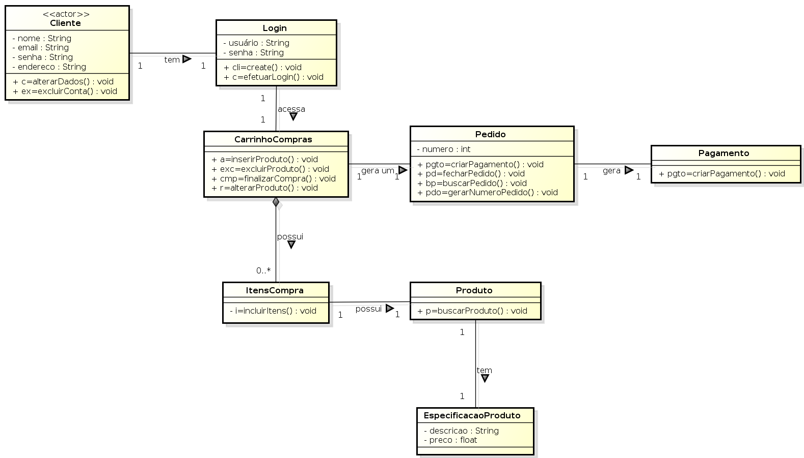
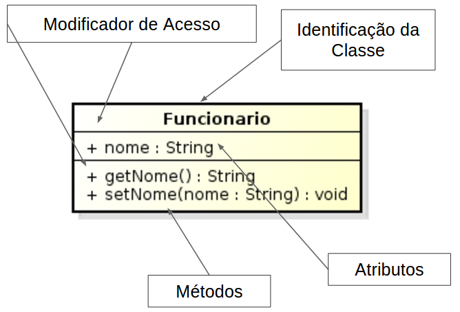
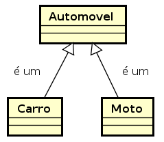

Showoff Menu
Close
Press ? for help.
All features are anonymous
Press ? for help.
All features are anonymous
Exercitar a Programação Orientada a Objetos utilizando as etapas do desenvolvimento de software orientado a objetos com UML.
Fonte: Plano de Ensino (a ser disponibilizado no Black)
Média = P1 * 0.4 + P2 * 0.5 + A * 0.1
| Aula | Tema | Aula | Tema |
|---|---|---|---|
| 1 | Classes e Objetos | 10 | Composição e Agregação |
| 2 | Herança | 11 | Interface |
| 3 | Polimorfismo | 12 | Acoplamento e Coesão |
| 4 | Abstração | 13 | Tratamento de Erros |
| 5 | Associação Simples | 14 | Testes Unitários |
| 6 | Modificadores de Acesso | 15 | Coleções |
| 7 | Exercícios | 16 | Exercícios |
| 8 | Prova P1 | 17 | Prova P2 |
| 9 | Vinculação Dinâmica | 18 | Prova Substitutiva |
Durante o curso serão utilizadas os seguintes tipos de software.
Será utilizado a linguagem de programação Java.
A versão a ser utilizada será a disponibilizada nos computadores do laboratório.
Qualquer IDE pode ser utilizada durante o curso pelos alunos.
O professor utilizará o Eclipse.
Qualquer Ferramenta de Modelagem UML pode ser utilizada durante o curso pelos alunos.
O professor utilizará o Astah.
Tell the class a little bit about yourself and your own background.
O que o computador é capaz de fazer?
O que o computador é capaz de fazer?
O computador é uma máquina capaz de realizar variados tipos de tratamento automático de informações ou processamento de dados.
Algumas das possíveis capacidades de umm computador são:
Fonte: https://pt.wikipedia.org/wiki/Computador
Como o computador realiza estas tarefas?
Como o computador realiza estas tarefas?
O que faz um computador ser capaz de efetuar tarefas são os Programas de Computadores.
Programas de Computadores são conjuntos de comandos e regras que um programador deve conhecer para poder manipular os recursos de um computador.
O programa diz ao computador o que fazer:
Como são estes comandos e regras?
Como são estes comandos e regras?
Programas de Computadores são escritos usando Linguagens de Programação, que definem regras específicas e bem determinadas para que um conjunto de operadores e comandos possam ser utilizados.

O conteúdo dos programas, escrito por programadores de forma que outros programadores possam ler e entendê-los, também é chamado de código ou Código-Fonte.

Como o computador entende os comandos e as regras?
Para que o código seja executado por um computador, ele deve ser traduzido da linguagem de programação (alto nível) para uma linguagem que possa ser compreendida pelo computador (baixo nível) através de um compilador.

Como o programa compilado, o computador consegue entender os comandos e executar a tarefa programa por um ser humano.
Dicionário Michaelis (http://michaelis.uol.com.br/)
Modelo, Padrão, Protótipo.
Wikipedia (https://pt.wikipedia.org/wiki/Paradigma)
Paradigma é um conceito que define um exemplo típico ou modelo de algo. É representação de um padrão a ser seguido.
Determina a visão que o programador possui sobre a estruturação e execução do programa.
É a maneira como pensamos e como iremos fazer nossos programas.
Um paradigma de programação fornece e determina a visão que o programador possui sobre a estruturação e execução do programa. Por exemplo, em programação orientada a objetos, programadores podem abstrair um programa como uma coleção de objetos que interagem entre si, enquanto em programação funcional os programadores abstraem o programa como uma sequência de funções executadas de modo empilhado.
Há diversas formas de classificar os paradigmas de programação.
De acordo com o Wikipedia, podem ser classificados em:
Fonte: https://pt.wikipedia.org/wiki/Paradigma_de_programação
De acordo com a ACM, podem ser classificados em:
ACM (Association for Computing Machinery) http://www.acm.uiuc.edu/signet/JHSI/cr.D.3.2.html
Linguagens expressam sequências de comandos que realizam transformações sobre dados.
Procedural
Orientação a Objetos
Linguagens que não possuem conceitos de sequências de comandos nem de atribuição.
Funcional
Programação Lógica
Fracamente Tipadas
Fortemente Tipada
Dinamicamente Tipada
Estaticamente Tipada
Os paradigmas de programação podem ser classificados quanto ao grau de abstração.
Baixo Nível
Médio Nível
Alto Nível
Símbolos são uma representação direta do código de máquina que será gerado.
Exemplo de Linguagens: Assembler
Exemplo de Código Assembler.
section .text
global _start
_start:
mov edx,len
mov ecx,msg
mov ebx,1
mov eax,4
int 0x80
mov eax,1
int 0x80
section .data
msg db 'Hello, world!',0xa
len equ $ - msgFonte: http://asm.sourceforge.net/intro/hello.html
Indicador da popularidade das linguagens de programação.
As classificações são baseadas no número de engenheiros qualificados em todo o mundo, cursos e fornecedores de terceiros.
Os motores de busca populares tais como Google, Bing, Yahoo !, Wikipedia, Amazon, YouTube e Baidu são usados para calcular as avaliações.

Fonte: http://www.tiobe.com/tiobe-index/
Robusta
Independente de arquitetura de Hardware
Em outras linguagens, desalocar área de memória é responsabilidde do programador http://javabook.compuware.com/content/memory/how-garbage-collection-works.aspx


| abstract | boolean | break | byte | case | catch |
| char | class | const | continue | default | do |
| double | else | extends | final | finally | float |
| for | goto | if | implements | import | instanceof |
| int | interface | long | native | new | package |
| private | protected | public | return | short | static |
| strictfp | super | switch | synchronized | this | throw |
| throws | transient | try | void | volatile | while |
| assert |
Total de 49 palavras reservadas
| abstract | boolean | break | byte | case | catch |
| char | class | const | continue | default | do |
| double | else | extends | final | finally | float |
| for | goto | if | implements | import | instanceof |
| int | interface | long | native | new | package |
| private | protected | public | return | short | static |
| strictfp | super | switch | synchronized | this | throw |
| throws | transient | try | void | volatile | while |
| assert |
42 palavras reservadas utilizadas no curso.
7 palavras reservadas não vistas no curso.
IntelliJ - https://www.jetbrains.com/idea/
Oracle JDeveloper - http://www.oracle.com/technetwork/developer-tools/jdev/overview/index.html
https://en.wikipedia.org/wiki/Integrated_development_environment
O método main é um método estático especial, usado como ponto de partida de um programa Java.
public static void main (String [] args) {
// implementação
}O array de strings é a lista de argumentos da linha de comando;
Pode-se declarar métodos main em qualquer classe.
Para imprimir textos na saída padrão em Java, chamamos o métodos:
void System.out.println (String texto);Imprime um texto e pula uma linha.
void System.out.print (String texto);Imprime um texto, mas não pula linha.
Saída Padrão: Tela
System.out.println (“Hello World!”);public class HelloWorld {
public static void main (String[ ] args) {
System.out.println(“Hello World!”);
}
}Compilação do arquivo HelloWorld.java Programa para compilação: javac
javac HelloWorld.javaFaz com que seja compilado automaticamente. É gerado o arquivo
HelloWorld.classExecução do arquivo HelloWorld.class Programa para execução: java
java HelloWorldFaz com que o programa seja executado. O método main da classe é executado.
Hello, World!A Programação Orientada a Objetos (POO) é um paradigma de Programação de Computadores que utiliza o conceito de Objetos como elementos centrais para representar e processar dados usados nos programas.
Quais as caracteríscas devem existir em uma Linguagem de programação para identificá-la como Orientada a Objetos?
Esta questão gerou muita controvérsia nos Anos 80.
De acordo com o artigo OOPSLA (publicado em 1987), de Peter Wegner, para uma linguagem ser Orientada a Objetos ela precisa:
Dimensions of object-based language design (http://dl.acm.org/citation.cfm?id=38823)
Além das anteriores, alguns autores também consideram que as seguintes características devem estar presentes em uma linguagem orientada a objetos:
Fonte: https://pt.wikipedia.org/wiki/Categoria:Linguagens_de_programação_orientadas_a_objetos
No Paradigma de Orientação a Objetos, um programa é visto como um conjunto de objetos que se comunicam através de mensagens.
Um programa OO possui objetos que colaboram entre si, executando tarefas específicas em busca de um objetivo comum.

A Programação Orientada a Objetos está sedimentada sobre 4 Pilares.
Mecanismo pelo qual uma classe pode derivar de outra classe, aproveitando seus comportamentos e estados.
Podemos fazer uma comparação com a classificação do reino animal da área de biologia.
Os animais são divididos em uma hierárquia de categorias, sendo que a mais inferior herda a classificação das categorias superiores.

Princípio pelo qual classes derivadas de uma mesma superclasse podem invocar método que têm a mesma identificação mas comportamento distintos.
Podemos fazer uma comparação com comportamentos semelhantes dos animais.
Todos animais emitem algum som, mas cada animal possui sua forma de emitir som.

Consiste na separação de aspectos internos e externos de um objeto.
Podemos fazer uma comparação como o papel do motor no carro.
Não é necessário saber como funciona internamente um motor para utilizá-lo. É necessário apenas saber como utilizá-lo.

É a habilidade de concentrar nos aspectos essenciais de um contexto qualquer, ignorando características menos importantes.
Podemos comparar a relação envolida em atividades especializadas.
Quando um médico, por exemplo, torna-se especialista em algum órgão do nosso corpo, ele abstrai sem desconsiderar as influências dos outros órgãos e foca apenas sua atenção nesse órgão.
Operação intelectual que consiste em isolar, por exemplo um conceito, um elemento à exclusão de outros, do qual então se faz a abstração.
Fonte: wikipedia
Escrever um modelo para representar um carro.

Escrever um modelo para representar um carro de brinquedo que será vendido na loja.
Escrever um modelo para representar um carro que será utilizado em uma concessionária.
Objeto é um conceito muito importante em um paradigma orientado a objetos.
Objetos são utilizados para representar as entidades do mundo real ou computacional no programa de computador.
Os objetos são usados para representar aqueles elementos e abstrações que fazem parte da solução do programa que está sendo desenvolvido.
Em um programa orientado a objetos, além da representação dos objetos precisamos que estes objetos se comuniquem um com o outro.
Muitas entidades ou abstrações podem ser representadas como objetos em um programa de computador.
Por exemplo, pessoas e carros podem ser vistos como objetos.

Objetos possuem características pelas quais os identificamos e finalidades para as quais os utilizamos.
Características = Atributos
| RG: 12.345.678-0 | Cor: branca |
| Nome: Fulano | Portas: 2 |
| Nascimento: 11/11/2011 | Tipo: conversível |
Objetos possuem características pelas quais os identificamos e finalidades para as quais os utilizamos.
Objetos possuem comportamentos associados.
Comportamentos = Métodos
| Andar | Ligar |
| Falar | Desligar |
| Dirigir | Acelerar |
| Frear |
Objetos possuem:
Características (atributos)
Comportamentos (métodos)
De forma geral, pensamos e organizamos o mundo segundo a nossa visão das características e finalidades da coisas.
Ou seja, pensamos Orientado a Objetos.
É comum criar grupos de objetos com base nas suas características e comportamentos.
No universo (contexto) de Carros, todos modelos e tipos possuem mesmas características e comportamentos.
Características
Comportamentos
A modelagem de um conjunto de objetos que possuem características e comportamentos em comum é realizada usando o conceito de Classe.
Cada Classe funciona como um molde para a criação de um Objeto.
Os Objetos são vistos como representações concretas (instâncias) da Classe.

Uma Classe define
Cada Classe contém
dados
bem como o conjunto de métodos que manipulam seus dados.
A instância de uma classe é chamada de objeto.
Estruturado
OO
Estruturado
OO
Estruturado
OO
Representa um conjunto de objetos com características afins. Uma classe define o comportamento dos objetos em seus métodos e quais estados ele é capaz de manter com seus atributos.
Objeto ou instâncias de uma classe.
É capaz de armazenar estados através de seus atributos e reagir a mensagens enviadas a ele, assim como se relacionar e enviar mensagens a outros objetos.
São características de um objeto. Trata-se da estrutura de dados que vai representar a classe.
Por sua vez, os atributos possuem valores.
O conjunto de valores dos atributos de um determinado objeto é chamado de estado.
Definem as habilidades dos objetos.
Um método em uma classe é apenas uma definição.
A ação só ocorre quando o método é invocado através do objeto.
É uma chamada a um objeto para invocar um de seus métodos, ativando um comportamento descrito por sua classe.
Mecanismo pelo qual uma classe (sub-classe) pode estender outra classe (super-classe), aproveitando seus comportamentos (métodos) e variáveis possíveis (atributos).
Mecanismo pelo qual um objeto utiliza os recursos de outro.
Consiste na separação de aspectos internos e externos de um objeto. Este mecanismo é utilizado amplamente para impedir o acesso direto ao estado de um objetos (seus atributos), disponibilizando externamente os métodos que acessam ou alteram seus estados.
É a habilidade de concentrar nos aspectos essenciais de um contexto qualquer, ignorando características menos importantes.
Princípio pelo qual duas ou mais classes derivadas de uma mesma superclasse podem invocar método que têm a mesma identificação (assinatura) mas comportamento distintos, especializados para cada classe.
É um "contrato", relacionado a comportamento, estabelecido entre a classe e o mundo externo (quem a utiliza).
São referências para organização lógica de classes e interfaces.
Dimensions of Object-Based Language Design
Peter Wegner, Brown University
168 OOPSLA ‘87 Proceedings October 4-8,1987 S
http://www.cse.msu.edu/~stire/cse891/wegner.pdf
Concepts and Paradigms of Object-Oriented Programming
Peter Wegner, Brown University
Expansion of Oct 400PSLA-89 Keynote Talk
http://www.cs.technion.ac.il/users/yechiel/Hassava/OOP-material/1990--p7-wegner.pdf
Para criarmos nosso primeiro programa orientado a objetos, vamos considerar o contexto de uma Universidade.
Inicialmente, nosso problema será:
Gerar um relatório com as informações dos professores.
Com este exemplo, abordaremos os conceitos básicos de orientação a objetos utilizando o exemplo com a linguagem Java.
Considerando o contexto do problema (professores de uma universidade), a primeira atividade a ser realizada é abstrair informações sobre a entidade professor.
O que é importante considerar na Entidade Professor neste problema?
Dado que determinamos que as informações da entidade Professor para este problema, podemos considerar que temos que já temos uma especificação.
Portanto, já podemos criar a classe Professor com suas características e comportamentos.
Exemplos de alguns professores com as características abordadas neste problema.
| Funcionário 1 | Funcionário 2 |
|---|---|
| nome: Fulano salario: 1.000,00 |
nome: Beltrano salario: 2.000,00 |
Representa um conjunto de objetos com características e comportamentos semelhantes.
É um “molde” para a criação de objetos.
Define o comportamento de seus objetos através de métodos e os estados possíveis destes objetos através de atributos.
A instância de uma classe é chamada de objeto.
Em linguagens fortemente tipadas (como, por exemplo, em Java), um atributo possui um um tipo definido.
Importante: Atributos definem o estado do objeto em um determinado instante.
Classe Pessoa
Classe Carro
Na linguagem Java, um atributo é declarado (inicialmente) com 3 partes:
A sintaxe, em Java, é a seguinte:
<modificador de acesso> <tipo do atributo> <nome do atributo>;Um exemplo de um atributo com:
O exemplo seria:
public String nome;public Integer idade;
public Date dataNascimento;
public Double salario;Determinan o comportamento dos objetos de uma classe.
Conjunto de instruções executadas por um objeto ao receber uma mensagem.
Permite ocultar as tarefas complexas realizadas.
O envio de mensagens (também chamado de métodos) pode alterar o estado de um objeto.
Podem ser executados por outros objetos ou pelo próprio objeto.
Uma chamada de método instrui o mesmo a realizar a sua tarefa
Classe Pessoa
Classe Cliente
Classe Carro
public String getNome () {
return nome;
}public Integer getIdade () { … };
private Date getDataNascimento () { … };
public Double getSalario () { … };Atributos: Determinam o estado do objeto
Métodos: Determinam o comportamento do objeto
[ modificador ] class <nome_da_classe>
[extends <nome_da_super_classe>]
[implements <interface_1>, <interface_2>, …] {
// Atributos (características)
[ modificador ] <tipo_da_variável> <nome_da_variável>;
// Métodos (Comportamentos)
[ modificador ] <tipo_de_retorno> <nome_do_método> ([parâmetros]) {
// variáveis internas ao método.
// Corpo do método.
}
}class <nome_da_classe> {
// Atributos (características)
<tipo_da_variável> <nome_da_variável>;
// Métodos (Comportamentos)
<tipo_de_retorno> <nome_do_método> ([parâmetros]) {
// variáveis internas ao método.
// Corpo do método.
}
}Criar uma classe em Java chamada Professor com as Caracteristicas:
nome do tipo String
salario do tipo double
Criar a classe utilizando uma IDE.
public class Professor {
public String nome;
public double salario
}Adicionar os Comportamentos: (obter nome do Professor) e (alterar nome do Professor)
public class Professor {
public String nome;
public double salario
public String obterNomeDoProfessor () {
return nome;
}
public void alterarNomeDoProfessor (String novoNome) {
nome = novoNome;
}
}Adicionar os Comportamentos: (obter salário do Professor) e (alterar salário do Professor)
public class Professor {
public String nome;
public double salario
public String obterNomeDoProfessor () {
return nome;
}
public void alterarNomeDoProfessor (String novoNome) {
nome = novoNome;
}
public String obterSalarioDoProfessor () {
return salario;
}
public void alterarSalarioDoProfessor (String novoSalario) {
salario = novoSalario;
}
}public class Professor {
public String nome;
public double salario
public String getNome () {
return nome;
}
public void setNome (String novoNome) {
nome = novoNome;
}
public String getNome () {
return salario;
}
public void setNome (String novoSalario) {
salario = novoSalario;
}
}Professor professor = new Professor();Variável - referência para o Objeto
Criação de um Objeto da Classe Funcionario
public class ProgramaPrincipal {
public static void main (String[] args) {
Professor professor = new Professor ();
double salario = professor.obterSalarioProfessor();
System.out.println("Salário: "+salario);
professor.alterarSalarioDoProfessor(1000);
System.out.println("Salário: " +
professor.obterSalarioProfessor());
}
}Um construtor é um método, como qualquer outro, com algumas características especiais:
o nome do método é igual ao nome da classe
o método não tem parâmetro de retorno
o método é chamado automaticamente quando no momento da criação do objeto.
public class Professor {
public Professor () {
System.out.println("Execução do Construtor");
}
}public static void main (String[] args) {
Professor professor = new Professor();
}Ao executar o programa acima, a saída será:
Execução do ConstrutorO construtor de uma classe é chamado de padrão quando não possui nenhum parâmetro.
Se nenhum construtor for definido explicitamente, o construtor padrão existe implicitamente.
Por exemplo, a classe abaixo, sem do construtor especificado
public class Professor {
}é exatamente igual a classe com o construtor declarado, mas com nenhum código.
public class Professor {
public Professor () {
}
}Se um construtor diferente do padrão for declarado, o construtor padrão implícito deixa de existir.
public class Professor {
private String nome;
public Professor (String nomeNovo) {
nome = nomeNovo;
}
}Neste caso, uma chamada para o construtor padrão não é possível.
public static void main (String[] args) {
Professor professor = new Professor(); // ERRO!!!
}Uma classe pode possuir vários construtores.
Por exemplo, a classe abaixo possuem dois construtores
public class Professor {
private String nome;
public Professor () {
nome = "";
}
public Professor (String nomeNovo) {
nome = nomeNovo;
}
}Em determinadas situações, para evitar a proliferação de identificadores na classe, como, por exemplo, na classe abaixo em que foi necessário ter dois identificadores (nome e novoNome) no construtor para realizar uma atribuição.
public class Professor {
private String nome;
public Professor (String nomeNovo) {
nome = nomeNovo;
}
}O código poderia ficar mais simples e legível se utilizássemos identificadores iguais. é necessário utilizarmos identificadores iguais.
public class Professor {
private String nome;
public Professor (String nome) {
nome = nome;
}
}Contudo, este código gera uma ambuiguidade para o compilador que não sabe exatamente se é o atributo que está recebendo o valor do parâmetro de entrada do construtor, ou o contário.
public class Professor {
private String nome;
public Professor (String nome) {
nome = nome; /// AMBIGUIDADE
}
}Para resolver este problema, utiliza-se a palavra reservada this, que permite realizar referências ao próprio objeto.
É utilizado quando há a necessidade de eliminar a ambiguidade de identificadores utilizados na classe.
No exemplo, ao utililizar this no identificador nome faz com que o compilador compreenda que está sendo feita referência para o atributo e não para o parâmetro de entrada do método.
public class Professor {
public String nome;
public Professor (String nome) {
this.nome = nome;
}
public void setNome (String nome) {
this.nome = nome;
}
}Métodos acessores são aqueles métodos que retornam alguma informação que represente o estado atual do objeto.
O método getNome da classe Professor retorna o valor da característica nome.
public class Professor {
public String nome;
public String getNome () {
return this.nome;
}
// ...
}Métodos seletores são aqueles que de alguma forma alteram o estado atual do objeto.
O método setNome da classe Professor altera o valor da característica nome, que representa o estado do objeto.
public class Professor {
public String nome;
public void setNome (String nome) {
this.nome = nome;
}
// ...
}Com a classe instanciada, é possível fazer chamada para seus métodos.
Utiliza-se o ponto ‘.’ para acessar um método.
No código abaixo, é realizada uma chamada para o método getNome da instância professor.
public static void main (String[] args) {
Professor professor = new Professor("Fulano");
System.out.println("Nome Professor: " + professor.getNome());
}Será impresso o valor da característica nome do ojeto professor.
Nome Professor: FulanoNote que a ligação entre o dado e a instância da classe.
Neste caso, a característica nome está relacionada diretamente com a instância.
Professor p1 = new Professor("Fulano");
System.out.println("Nome Professor p1: " + p1.getNome());
Professor p2 = new Professor("Beltrano");
System.out.println("Nome Professor p2: " + p2.getNome());Cada instância tem o valor específico da sua característica.
Métodos também podem não retornar nenhum valor.
Utiliza-se a palavra reservada void para indicar que o método não retorna nenhum valor.
No código abaixo, o método zeraSalario não retorna nenhum valor.
public class Professor {
// ...
public void zeraSalario () {
salario = 0.0;
}
}Nestes casos, é opcional o uso da palavra reservada return. Caso queira utilizá-la, deverá apenas escrever "return;"
Métodos podem possuir quantos parâmetros forem necessários. Quando houver mais de um parâmetro, eles devem ser separados por ','.
No exemplo abaixo, o método possui apenas um único parâmetro.
public void metodo (String param1) {
// ...
}O método abaixo possui dois parâmetros separados por vírgula.
public void metodo (String param1, String param2) {
// ...
}Variáveis criadas dentro do método são chamadas de temporárias, pois o seu tempo de vida (escopo) é apenas durante a execução do método.
public double aumentaSalario (double valor) {
double novoSalario = salario + valor;
this.salario = novoSalario;
return salario;
}Escreva uma classe em Java que represente um livro, de acordo com as informações:
Um livro tem como atributos o título, o nome do autor e a quantidade de páginas.
Deve haver um único construtor que inicialize o título, nome do autor e a quantidade de páginas do livro.
A classe deve possuir os métodos seletores e acessores de todos os atributos.
Implementar a classe Carro de acordo com as seguintes informações:
Com as características:
Com um construtor padrão
Com outro construtor que recebe informações para preencher todas as características
Com os comportamentos:
Criar uma classe em Java representar uma progressão aritmética conforme as seguintes informações:
A classe deve possuir dois atributos para representar
A Classe deve possuir um único construtor que recebe o valor inicial e a razão.
Implementar o método seletor para mudar para o próximo valor da sequencia.
public void proximoValor () {
// implementar o código
}Implementar o método acessor para retornar o valor atual da progressão.
public int valorAtual () {
// implementar o código
}public class ProgramaPrincipal {
public static void main (String[] args) {
int valorInicial = 5;
int razao = 3;
ProgressaoAritmetica pa =
new ProgressaoAritmetica(valorInicial, razao);
for (int i=0; i<10; i++) {
System.out.print (pa.valorAtual() + " ");
pa.proximoValor();
}
}
}Resultado Desejado:
5 8 11 14 17 20 23 26 29 32Quando desenvolvemos em alguma linguagem, devemos levar em consideração as convenções de nomenclatura para deixar nosso código o mais legível e documentável possível.
Cada linguagem de programação possui suas convenções de nomenclatura.
É muito importante seguir as convenções de nomenclatura da linguagem que está programando.
Motivos:
Nomes bem escolhidos tornam o código mais legível.
Código mais legível diminui a necessidade de comentários que expliquem o que o código faz.
O código pode ser a própria documentação.
Outra questão a ser levada em considerada é a criação dos nomes.
Os nomes utilizados devem ser:
claro (sem ambiquidade)
simples (composto com mínimo de palavras)
único (referir-se a um único conceito)
Teoricamente, é possível nomear uma classe com qualquer nome suportado pela linguagem.
É importante seguir algumas regras adotadas, caso contrário, outros profissionais ao ver o seu código podem considerá-lo amador sem nem querer saber o quão bem ele foi programado.
Até 1999, o padrão era documentado pela Sun (antes do Oracle comprá-la):
'Code Conventions' http://www.oracle.com/technetwork/java/javase/documentation/codeconvtoc-136057.html
Depois foi desconsiderada, mas é possível encontrar alguns padrões:
Google Java Style Guide https://google.github.io/styleguide/javaguide.html
Outra forma, é identificar como a comunidade trabalha.
Por convenção, toda classe deve começar cum uma letra maiúscula e não deve conter letras não ASCII.
Caso o nome de uma classe seja composto por mais de uma palavra, a primeira letra de cada palavra deve ser maiúscula.
O nome da classe deve ser exatamente o mesmo nome de seu arquivo fonte (.java)
Arquivo: Pessoa.java
class Pessoa {
// ...
}Arquivo: ImpostoDeRenda.java
class ImpostoDeRenda {
// ...
}Arquivo: URL.java
class URL {
// ...
}Os pacotes devem começar com uma letra minúscula e podem usar letras não ASCII.
Não pode iniciar o nome do pacote com caracteres especiais ou números.
Caso o nome de um pacote seja composto por mais de uma palavra, a primeira letra de cada palavra deve ser em maiúscula.
package br.com.senac.sp.poo;
package tads.pi3;
package br.com.comercioEletronico;Podem começar com qualquer letra e os caracteres $ e _
Não podem começar com números.
Caso o nome seja composto por mais de uma palavra, a primeira letra de cada palavra deve ser em maiúscula.
String nome;
String _email;
String salarioMensal;Os atributos finais (constantes) deve ser escritos em letras maiúsculas.
Usamos underline ( _ ) para separar nomes compostos.
final int TAMANHO = 10;
final boolean PARAR_DE_EXECUTAR = true;
final String VERMELHO = "Vermelho";Este módulo refere-se a um dos quatro pilares do paradigma orientado a objetos.
Herança
Polimorfismo
Abstração
Encapsulamento
Uma das principais características do paradigma de programação orientado a objetos é a capacidade de Reutilização de Código.
Alguns dos benefícios que a Reutilização de Código provê são:
Reduz a quantidade de código para escrever
Economiza o trabalho do programador
Diminui a possibilidade de erros
O paradigma de programação orientado a objetos possui alguns mecanismos para reutilizar código:
Herança
Associação
É um princípio de Programação Orientada a Objetos que permite a criação de novas classes a partir de outras já existentes.
As classes pertencentes a um relacionamento de Herança podem ser chamadas de formas diferentes.
Classe nova
Classe já existente
Alguns exemplos de expressões utilizadas para referenciar Herança:
Uma das mais importantes é a expressão
No Paradigma Orientado a Objetos, a Herança possibilita a criação de uma Hierarquia de Classes.
Com esta Hierarquia, subclasses são capazes de herdar características (atributos) e comportamentos (métodos) de uma superclasse.
Poderoso mecanismo para o reaproveitamento de código.
Facilita a manutenção do código.
Considere as duas classes abaixo.
ClasseA com o método metodoA()
public class ClasseA {
public metodoA () {
// corpo do método
}
}ClasseB com o método metodoB()
public class ClasseB {
public metodoB () {
// corpo do método
}
}Cada instância tem acesso apenas aos métodos definidos na sua própria classe.
public static void main (String[] args) {
ClasseA classeA = new ClasseA();
classeA.metodoA();
ClasseB classeB = new ClasseB();
classeB.metodoB();
}Não é possível uma instância acessar o método de outra instância.
public static void main (String[] args) {
ClasseA classeA = new ClasseA();
classeA.metodoB(); // ERRO!!!!
}Como fazer para que uma instância da ClasseA tivesse acesso para o metodoB() da ClasseB?
Uma possibilidade seria copiar o metodoB() na ClasseA.
A ClasseA alterada ficaria da seguinte forma:
public class ClasseA {
public metodoA () {
// corpo do método
}
public metodoB () {
// corpo do método
}
}Agora sim, uma instância da ClasseA pode chamar o metodoB(), pois ela está definida na ClasseA.
public static void main (String[] args) {
ClasseA classeA = new ClasseA();
classeA.metodoB(); // Correto!!!!
}Resolver o problema com o recurso de Cópia de Código não é uma abordagem boa se considerarmos algumas das vantagens que o paradigma orientado a objetos
O código está sendo copiado.
Caso ocorra uma alteração no metodoB(), será necessário corrigir em dois lugares.
Qual a alternativa?
Uma possibilidade aderente ao paradigma orientado a objetos é a utilização de Herança.
Para aplicar Herança em Java, utiliza-se a palavra reservada extends.
Considere a classe chamada SuperClasse
public class SuperClasse {
}E uma outra classe chamada SubClasse
public class SubClasse {
}Ao aplicar Herança na classe SubClasse com a classe SuperClasse, ela ficaria desta forma
public class SubClasse extends SuperClasse {
}Voltando ao exemplo, podemos aplicar Herança na classe ClasseB para que ela tenha acesso ao método metodoA() da classe ClasseA.
A classe ClasseB alterda fica da seguinte forma:
public class ClasseB extends ClasseA {
public metodoB () {
// corpo do método
}
}Desta forma, uma instância da ClasseA pode chamar o metodoB(), pois ela herda métodos e atributos da classe ClasseA.
public static void main (String[] args) {
ClasseA classeA = new ClasseA();
classeA.metodoB(); // Correto!!!!
}O método foi reaproveitado sem a necessidade de cópia.
Para melhor comunicar sobre as possibilidades de relacionamento das classes, utilizamos diagramas para visualização.
Esta comunicação é realizada pela linguagem de modelagem chamada UML.
O módulo UML explica com mais detalhes.
Há duas formas de Herança
Herança Simples
Herança Múltipla
Várias subclasses podem herdar da mesma superclasse.
public class SuperClasse {
}
public class SubClasse1 extends SuperClasse {
}
public class SubClasse2 extends SuperClasse {
}Uma subclasse pode herdar de várias superclasses.
A linguagem Java não suporta Herança Múltipla.
public class Carro {
public void puxarFreioDeMao() {
}
}
public class Barco {
public void jogarAncora() {
}
}
public class CarroAnfibio extends Carro, Barco {
}ATENÇÂO: Em Java não funciona! Veremos mais adiante como resolver o problema.
public interface Carro { public void puxarFreioDeMao(); } public interface Barco { public void jogarAncora(); } public class CarroAnfibio implements Carro, Barco { private Carro carro; private Barco barco; public void CarroAnfibio( Carro carro, Barco barco ) { this.carro = carro; this.barco = barco; } public void puxarFreioDeMao() { carro.puxarFreioDeMao(); } public void jogarAncora() { barco.jogarAncora(); } }
A hierarquia de herança pode ter várias níveis.
Representa o relacionamento É UM
imagem
Exemplos: carro é um veículo livro é uma publicação
É a primeira abordagem a ser feita sobre herança e possibilita a vantagem mais direta e evidente que é a reutilização de código.
A generalização é o agrupamento de características (atributos) e regras (métodos) comuns em um modelo de sistema.
A especialização é o processo inverso, é a definição das particularidades de cada elemento de um modelo de sistemas, detalhando características e regras específicas de um o objeto.
Vamos criar um programa de computador utilizando o Paradigma Orientado a Objetos ...
Dado um arquivo com informações de folha de pagamento Criar um programa orientado a objetos que imprime o relatório e na última linha aq=
Dado uma empresa Analista, coordenador, Gerente arquivo com criar um programa que imprime a idade, nome
Uma das primeiras atividades a ser realizada para criar um programa de computador A primeira tarefa a ser realizada para criar um programa orientado a objetos Para criarmos um programa orientado a objetos,
inicialmente podemos utilizar a especificação do problema como forma de identificar as possíveis classes, seus atributos (características) e seus métodos (comportamento).
Dado a especificação Funcionários podem ser: Professores Coordenadores
Possíveis Características da Classe Professor * nome * cpf * salário
Possíveis Características da Classe Coordenador * nome * cpf * salário
colocar imagem
Ferramenta de Modelagem http://astah.net/editions/community/
colocar imagem
imagem de professor coordenador diretor
Vamos criar as Classes Java a partir do Diagrama UML ...
public class Diretor {
private String nome;
private String cpf;
public Diretor (String nome, String cpf) {
this.nome = nome;
this.cpf = cpf;
}
public void setNome(String nome) {
this.nome = nome;
}
public String getNome() {
return this.nome;
}
public void setCpf(String cpf) {
this.cpf = cpf;
}
}public class Coordenador {
private String nome;
private String cpf;
public Coordenador (String nome, String cpf) {
this.nome = nome;
this.cpf = cpf;
}
public void setNome(String nome) {
this.nome = nome;
}
public String getNome() {
return this.nome;
}
public void setCpf(String cpf) {
this.cpf = cpf;
}
}public class Professor {
private String nome;
private String cpf;
public Professor (String nome, String cpf) {
this.nome = nome;
this.cpf = cpf;
}
public void setNome(String nome) {
this.nome = nome;
}
public String getNome() {
return this.nome;
}
public void setCpf(String cpf) {
this.cpf = cpf;
}
}Criar a classe Relatorio. No método main: Instanciar as seguintes classes: Professor: “Fulano”, “123.456.789-01”, 1000 Coordenador: “Beltrano”, “345.678.901-23”, 2000 Diretor: “Ciclano”, “567.890.123-44”, 3000 2. Imprimir um relatório da seguinte forma: Fulano (123.456.789-01): 1000 Beltrano (345.678.901-23): 2000 Ciclano (567.890.123-44): 3000
public class Relatorio {
public static void main (String[] args) {
Professor p
System.out.println();
}
}Fulano (123.456.789-01): 1000 Beltrano (345.678.901-23): 2000 Ciclano (567.890.123-44): 3000
Usando o Princípio da Herança, Como poderíamos melhorar esta solução (modelagem)?
colocar imagem
Professor É UM Funcionário Coordenador É UM Funcionário Diretor É UM Funcionário
imagem e código
repetição eliminada manutenção facilitada
código novamente.
Funcionário * nome * cpf * salário
Tipos de Funcionários
Funcionário 1: Professor nome: Fulano cpf: 111.111.111-11 salário: 1.000 tipo contratação: CLT
Funcionário 2: Coordenador nome: Beltrano cpf: 222.222.222-22 salário: 2.000 departamento: Computação
Funcionário 3: Segurança nome: Ciclano cpf: 333.333.333-33 salário: 3.000 período: Noturno
Adicionar os atributos em uma classe e deixar os atributos vazios quando necessário.
colocar imagem
Fica estranho...
Porque fica estranho?
atributos podem não ser utilizados difícil determinar qual o tipo de funcionário
Criar classes iguais com os parâmetros iguais e adicionais.
incluir imagem
Fica estranho também ...
Porque fica estranho?
Utilizar Herança, ou seja, criar uma classe pai e herdar os atributos e métodos
colocar imagem
Esta modelagem parece melhor...
Porque?
Herança Múltipla: uma classe herda métodos e campos de duas classes simultaneamente. Herança Simples: uma classe herda métodos e atributos de uma única classe pai. Não existe mecanismo de Herança Múltipla em Java. Exemplo:
colocar imagem
Classe Funcionario com atributo salário e método aplicarBonus.
public class Funcionario {
public double salario;
public Funcionario (double salario) {
this.salario = salario;
}
public void aplicarBonus() {
// Aumento de 30%
this.salario = 1.3 * this.salario;
public double getSalario () {
return this.salario;
}}
Alterando salário do Funcionário...
public class Funcionario {public double salario;
public Funcionario (double salario) { this.salario = salario; }
public void aplicarBonus() { // Aumento de 30% this.salario = 1.3 * this.salario; }
public double getSalario () { return this.salario; } }
Salário: 2.000
public static void main (String[] args) {Funcionario f = new Funcionario(1.000); f.salario = 2.0 * f.salario; System.out.println (“Salário: “ + f.getSalario()); }
Como impedir que o salário do Funcionário seja aumentado mais que o bônus?
public class Funcionario {public double salario;
public Funcionario (double salario) { this.salario = salario; }
public void aplicarBonus() { // Aumento de 30% this.salario = 1.3 * this.salario; }
public double getSalario () { return this.salario; } }
Salário: 2.000
public static void main (String[] args) {Funcionario f = new Funcionario(1.000); f.salario = 2.0 * f.salario; System.out.println (“Salário: “ + f.getSalario()); }
Utilização do Modificador Correto.
public class Funcionario {private double salario;
public Funcionario (double salario) { this.salario = salario; }
public void aplicarBonus() { // Aumento de 30% this.salario = 1.3 * this.salario; }
public double getSalario () { return this.salario; } }
Salário: 2.000
public static void main (String[] args) {Funcionario f = new Funcionario (1.000); //f.salario = 2.0 * f.salario; //ERRO f.aplicaBonus(); System.out.println (“Salário: “ + f.getSalario()); }
Como impedir que o salário do Funcionário seja aumentado mais que o bônus?
public class Funcionario {
public double salario;
public Funcionario (double salario) {
this.salario = salario;
}
public void aplicaBonus() {
// Aumento de 30%
this.salario = 1.3 * this.salario;
public double getSalario () {
return this.salario;
}}
Salário: 2.000
public static void main (String[] args) {Funcionario f = new Funcionario(1.000); f.salario = 2.0 * f.salario; System.out.println (“Salário: “ + f.getSalario()); }
Restringindo o acesso ao atributo salario da classe Funcionario.
public class Funcionario {
private double salario;
public Funcionario (double salario) {
this.salario = salario;
}
public void aplicaBonus() {
// Aumento de 30%
this.salario = 1.3 * this.salario;
public double getSalario () {
return this.salario;
}}
Salário: 1.300
public static void main (String[] args) {Funcionario f = new Funcionario (1.000); //f.salario = 2.0 * f.salario; //ERRO f.aplicaBonus(); System.out.println (“Salário: “ + f.getSalario()); }
Como o relacionamento de Herança ocorre entre duas classes e ambas possuem construtores, precisamos saber como ocorre a chamada dos construtores das classes.
O primeiro construtor a ser chamado é o construtor da classe sendo instanciada.
Contudo, a primeira tarefa a ser realizada DEVE ser chamar o construtor da classe mãe.
Considere as seguintes classes a seguir relacionadas por Herança.
ClasseMae representando a super classe
public class ClasseMae {
public ClasseMae () {
System.out.println("Executando o construtor da ClasseMae");
}
}ClasseFilha representando a classe filha, herdada da ClasseMae
public class ClasseFilha extends ClasseMae {
public ClasseFilha () {
System.out.println("Executando o construtor da ClasseFilha");
}
}Ao instanciar a classe ClasseFilha
public static void main (String[] args) {
ClasseFilha classeFilha = new ClasseFilha();
}Temos o seguinte resultado
Executando o construtor da ClasseMae
Executando o construtor da ClasseFilhaApesar do construtor da classe ClasseFilha ter sido chamado primeiro, o código da classe ClasseMae é executado primeiro.
A primeira tarefa a ser realizada DEVE ser chamar o construtor da classe mãe.
No exemplo anterior, a chamada para o construtor da classe mãe foi realizada implicitamente da palavra reservada super.
public class ClasseFilha extends ClasseMae {
public ClasseFilha () {
super ();
System.out.println("Executando o construtor da ClasseFilha");
}
}A palavra reservada super foi utilizada como referência para o método construtor da classe mãe. Neste caso, o construtor padrão, pois o método não possui nenhum parâmetro de entrada.
A chamada para o construtor padrão da classe mãe é opcional caso a classe mãe tenha definido o construtor padrão.
Por este motivo, o código sem a chamada explícita funciona no exemplo anterior.
Uma classe sem construtor, define implicitamente um construtor padrão com o corpo do método vazio.
Exemplo de uma superclasse sem construtor.
public class SuperClasse {
}Exemplo de uma subclasse sem construtor.
public class SubClasse extends SuperClasse {
}Estes códigos estão corretos pois implicitamente o construtor da classe filha está chamando o construtor da classe mãe.
Implicitamente, o código que está sendo executado é o seguinte.
Exemplo de uma superclasse sem construtor.
public class SuperClasse {
public SuperClasse ( ) {
}
}Exemplo de uma subclasse sem construtor.
public class SubClasse extends SuperClasse {
public SubClasse ( ) {
super ( );
}
}Estes códigos estão corretos pois implicitamente o construtor da classe filha está chamando o construtor da classe mãe.
Caso o construtor padrão não esteja definido na classe mãe, uma chamada explícita DEVE ser realizada.
Um construtor padrão não está definido se algum outro construtor foi definido e ele não foi definido explicitamente.
Neste exemplo, a classe SuperClasse não possui o construtor padrão definido.
public class SuperClasse {
private String parametro;
public SuperClasse (String parametro) {
this.parametro = parametro;
}
}Logo, uma classe a herde, deverá necessariamente chamá-la. A classe filha pode realizar este tratamento de duas formas:
O construtor da subclasse passa algum valor explicitamente na chamada do construtor da classe mãe.
public class SubClasse extends SuperClasse {
public SubClasse () {
super ("valor qualquer");
}
}O construtor da subclasse recebe como parâmetro de entrada e repassa para a classe mãe.
public class SubClasse extends SuperClasse {
public SubClasse (String parametro) {
super (parametro);
}
}No caso em que a super classe defina mais de um construtor, a classe filha pode escolher qual utilizar.
Neste caso, a super classe possui construtores adicionais e o construtor padrão deve ser explicitamente definido.
public class SuperClasse {
private String parametroA;
public SuperClasse () {
this.parametroA = "qualquer valor";
}
public SuperClasse (String parametroA) {
this.parametroA = parametroA;
}
}Temos duas opções para realizar as chamadas.
Pode ser utilizado o construtor padrão
public class SubClasse extends SuperClasse {
public SubClasse () {
super ();
}
}Ou, o segundo construtor
public class SubClasse extends SuperClasse {
public SubClasse (String parametroA) {
super (parametroA);
}
}Neste caso, a super classe possui construtores adicionais, contudo o construtor padrão não está definido.
public class SuperClasse {
private String parametroA;
private Integer parametroB;
public SuperClasse (String parametroA) {
this.parametroA = parametroA;
}
public SuperClasse (Integer parametroB) {
this.parametroB = parametroB;
}
}Temos duas opções para realizar as chamadas.
Pode ser utilizado o primeiro construtor
public class SubClasse extends SuperClasse {
public SubClasse (String parametroA) {
super (parametroA);
}
}Ou o segundo construtor
public class SubClasse extends SuperClasse {
public SubClasse (Integer parametroB) {
super (parametroB);
}
}Exemplo/Exercíco: Funcionario/Gerente, ClasseMae/ClasseFilha
Herança também pode surgir a partir da refatoração de classes existentes de modo a eliminar a duplicação de código.
(Exemplo em UML - Gerente e Programador, depois superclasse Funcionario)
Motivação para Refatoração: Grande Quantidade de atributos e métodos duplicados.
Não usar Herança quando a relação não é claramente ‘é um’.
Não use Herança apenas por reaproveitamento de código da classe mãe.
Ao utilizar Herança com muitos filhos, pode gerar mais problemas.
Quebra do encapsulamento. Quando um método na classe mãe muda pode quebrar o comportamento da classe filha.
Crie uma classe Pessoa contendo os atributos encapsulados, com seus respectivos seletores (getters) e modificadores (setters), e ainda o construtor padrão e pelo menos mais duas opções de construtores conforme sua percepção.
Atributos: nome, endereço, telefone.
Crie a subclasse Fornecedor a partir da classe Pessoa (exercício anterior).
A classe fornecedor tem além dos atributos que caracterizam a classe Pessoa, também os atributos valorCredito (correspondente ao crédito máximo atribuído ao fornecerodr), valorDivida (montante da dívida para com o fornecedor).
Implemente a classe Fornecedor, para além dos usuais métodos seletores e modificares, um método obterSaldo que devolve a diferença entre os valores dos atributos valorCredito e valorDivida. Depois de implementada a classe Fornecedor, crie um programa de teste adequado que lhe permita verificar o funcionamento dos métodos implementados na classe Fornecedor e os herdados da classe Pessoa.
São padrões de visibilidade de acesso às classes, atributos e métodos.
Controlam como as classes e seus membros são visíveis por outras classes.
O Modificador de Acesso também pode ser referenciado como Restrição de Acesso.
Java possui 4 níveis de controle de acesso, que são aplicados a classes, atributos e métodos.
Os modificadores de acesso podem ser aplicados em diversos lugares:
classe
atributo
método
O exemplo a seguir possui o modificar público para todos os lugares.
public class Funcionario {
public String nome;
public Funcionario (String nome) {
this.nome = nome;
}
public String getNome() {
return this.nome;
}
}Uma declaração com este modificador pode ser acessada de qualquer lugar e por qualquer objeto.
Em Java, o modificador público é realizado pela palavra reservada public.
public static void main (String[] args) {
Funcionario f = new Funcionario();
String nome = f.getNome();
nome = f.nome;
}Representação em UML - símbolo - (menos)
public class Funcionario {
private String nome;
public Funcionario (String nome) {
this.nome = nome;
}
private String getNome() {
return this.nome;
}
} xxx
public static void main (String[] args) {
Funcionario f = new Funcionario();
String nome = f.getNome();
nome = f.nome;
}Representação em UML - símbolo # (cerquilha)
A classe e seus membros (atributos e métodos) são acessíveis somente por classes do mesmo pacote.
Não há palavra-chave associada em Java e é utilizado quando o modificador não é especificado.
Representação em UML - símbolo ~ (til)
Veremos exemplos na aula de pacotes.
Os modificadores são representados no diagrama pelos símbolos ~, +, - e # que devem ser colocados antes dos atributos e métodos.
default (ou package) - símbolo ~ (til) Não há palavra-chave associada em Java e é utilizado quando o modificador não é especificado.
| Visibilidade | private | default | protected | public |
|---|---|---|---|---|
| mesma classe | SIM | SIM | SIM | SIM |
| mesmo pacote | NÃO | SIM | SIM | SIM |
| pacotes diferentes (subclasses) | NÃO | NÃO | SIM | SIM |
| pacotes diferentes (sem subclasses) | NÃO | NÃO | NÃO | SIM |
Em Orientação a Objetos, é comum proteger os atributos da classe com o modificador private.
Uma classe é responsável pelo controle de acesso de seus atributos e métodos.
O modificador private impede que outras classes acessem diretamente atributos da classe indevidamente.
Classe Funcionario com atributo salário e método aplicarBonus.
public class Funcionario {
public double salario;
public Funcionario (double salario) {
this.salario = salario;
}
public void aplicarBonus() {
// Aumento de 30%
this.salario = 1.3 * this.salario;
public double getSalario () {
return this.salario;
}}
Alterando salário do Funcionário...
public class Funcionario {public double salario;
public Funcionario (double salario) { this.salario = salario; }
public void aplicarBonus() { // Aumento de 30% this.salario = 1.3 * this.salario; }
public double getSalario () { return this.salario; } }
Salário: 2.000
public static void main (String[] args) {Funcionario f = new Funcionario(1.000); f.salario = 2.0 * f.salario; System.out.println (“Salário: “ + f.getSalario()); }
Como impedir que o salário do Funcionário seja aumentado mais que o bônus?
Utilização do Modificador Correto.
public class Funcionario {private double salario;
public Funcionario (double salario) { this.salario = salario; }
public void aplicarBonus() { // Aumento de 30% this.salario = 1.3 * this.salario; }
public double getSalario () { return this.salario; } }
salario 2000
public static void main (String[] args) {Funcionario f = new Funcionario (1.000); //f.salario = 2.0 * f.salario; //ERRO f.aplicaBonus(); System.out.println (“Salário: “ + f.getSalario()); }
Restringindo o acesso ao atributo salario da classe Funcionario.
public class Funcionario {
private double salario;
public Funcionario (double salario) {
this.salario = salario;
}
public void aplicaBonus() {
// Aumento de 30%
this.salario = 1.3 * this.salario;
public double getSalario () {
return this.salario;
}}
salario: 1300
public static void main (String[] args) {Funcionario f = new Funcionario (1.000); //f.salario = 2.0 * f.salario; //ERRO f.aplicaBonus(); System.out.println (“Salário: “ + f.getSalario()); }
Classe A (classe mãe)
Classe B (classe filha de A no mesmo pacote)
Classe C (classe filha de A em pacote diferente)
Representação em UML - símbolo + (mais)
Independente do tamanho do seu problema é importante que exista alguma forma de comunicar sua solução sem a necessidade de construir o código.
Também é importante que, dado um software já construído, exista alguma forma de representá-lo sem a necessidade de mostrar o código.
A solução de um problema utilizando o Paradigma Orientado a Objetos pode ser comunicado por meio de uma Linguagem de Modelagem.
UML é uma Linguagem Padrão para:
Visualização
Especificação
Construção
Documentação
de Software Orientado a Objetos.

A existência de um modelo visual facilita a comunicação e faz com que os menbros de um grupo tenham a mesma ideia do sistema.
Cada símbolo gráfico tem uma semântica bem definida.
Geração automática de código a partir do modelo visual.
Geração do modelo visual a partir do código.
Ambientes de desenvolvimento permitem:
movimentação em ambos os sentidos
manutenção da consistência entre as visões
Pode incluir artefatos como:
Especificação de requisitos do sistema
Especificações funcionais
Planos de teste
Materiais importantes para controlar, medir e refletir sobre um sistema durante o desenvolvimento e a implantação
UML oferece uma forma padrão para desenhar a Arquitetura de um Sistema.
Processos de Negócio
Funcionalidades do Sistema
Classes
Esquemas de Banco de Dados
Componentes de Software
...
para comunicar a estrutura e o comportamento desejado de um sistema.
para visualizar e controlar a arquitetura de um sistema.
para melhorar o entendimento de um sistema expondo oportunidades para melhorias e reutilizações.
para administrar riscos e trade-offs.
Diagrama é uma representação gráfica de uma coleção de elementos de um modelo.
São desenhados para permitir a visualização de um sistema sob diferentes perspectivas.
Tipos de Diagramas
Diagramas estruturais
Diagramas Comportamentais
Usados para visualizar, especificar, construir e documentar aspectos Estáticos de um sistema.
Diagrama de Classes
Diagrama de Objetos
Diagrama de Pacotes
Diagrama de Componentes
Diagrama de Implantação
Oferece uma visão estática da estrutura do sistema.
Exibe classes e relacionamentos entre elas.

Descreve os tipos de objetos no sistema e os vários tipos de relacionamentos estáticos que podem existir entre eles.
Usados para visualizar, especificar, construir e documentar aspectos Dinâmicos de um sistema:
Diagrama de Casos de Uso
Diagrama de Sequência
Diagrama de Colaboração
Diagrama de Estados
Diagrama de Atividades
Um caso de uso é uma interação típica entre um usuário e um sistema.
Um caso de uso captura alguma função visível ao usuário.
Especificam e documentam o comportamento do sistema.
Importantes para as organizações e para a modelagem de comportamentos do sistema.
Não descreve a organização interna do software.
Computer-Aided Software Engineering Ferramentas computacionais que ajudam nas atividades de engenharia de software.
Exemplos de Ferramentas
Ferramentas Livres
Ferramentas Pagas
Descreve os tipos de objetos no sistema e os vários tipos de relacionamentos estáticos que podem existir entre eles.
Tipos de relacionamento:
Subtipos (Herança)
Delegações (Associações)
Diagramas de classes mostram (comunicam):
atributos e métodos de uma classe
restrições à maneira com que os objetos são conectados


Editora: Bookman Companhia
Autor: Martin Fowler
http://martinfowler.com/books/uml.html

Este módulo refere-se a um dos quatro pilares do paradigma orientado a objetos.
Conforme já abordado, o mecanismo de Herança permite a criação de classes a partir de outras já existentes.
O relacionamento entre estas classes é do tipo É-UM.
A partir de uma mesma classe genérica, classes mais especializadas podem ser criadas.

A relação É-UM entre classes permite a existência de outra característica fundamental no paradigma programação orientada a objetos: o Polimorfismo
Por exemplo, no diagrama de classes abaixo, as classes Carro e Moto são classes especializadas da classe Automovel, cujo relacionamento É-UM é válido.

Polimorfismo é o princípio pelo qual duas ou mais classes derivadas de uma mesma superclasse podem invocar métodos que têm a mesma identificação (assinatura) mas comportamentos distintos, especializados para cada classe derivada.
Na Língua Portuguesa:
No Paradigma Orientado a Objetos:
Polimorfismo está diretamente ligado a Herança de classes.
A ligação ocorre porque os comportamentos diferentes são implementados nas classes filhas.
Considere o seguinte diagrama de classes.
public class ClasseMae {
public void metodoA() {
System.out.println("metodoA executado na ClasseMae");
}
}
public class ClasseFilha1 extends ClasseMae {
public void metodoA() {
System.out.println("metodoA executado na ClasseFilha1");
}
}
public class ClasseFilha2 extends ClasseMae {
public void metodoA() {
System.out.println("metodoA executado na ClasseFilha2");
}
}O polimorfismo ocorre em conjunto com a herança quando dois métodos possuem a mesma assinatura.
public static void main (String[] args) {
ClasseFilha1 cf1 = new ClasseFilha1();
ClasseFilha1 cf2 = new ClasseFilha2();
cf1.metodoA();
cf2.metodoA();
}Tratam-se de chamadas de métodos normais em duas classes.
metodoA executado na ClasseFilha1
metodoA executado na ClasseFilha2O detalhe ocorre por causa do método ser o mesmo e as classes serem filhas da mesma classe.
O Polimorfismo permite que métodos com a mesma assinatura produzam resultados diferentes, dependendo do objeto ao qual é aplicado.
A mesma chamada de método (ou envio de mensagem para um objeto) pode produzir “muitas formas” de resultados.
Conforme mostrado anteriormente, podemos ter dois objetos realizando chamada para um mesmo método.
cf1.metodoA();
cf2.metodoA();Contudo, o resultado pode ser diferente.
metodoA executado na ClasseFilha1
metodoA executado na ClasseFilha2O Polimorfismo permite programar de forma genérica em vez de programar de forma específica.
Para compreender melhor o que é programar de forma genérica e o que é programar de forma específica, vamos continuar com o exemplo das classes filhas da classe Automovel.
Para mostrar os benefícios de programar de forma genérica, trabalharemos com coleções de objetos.
A linguagem Java possui uma classe responsável por armazenar coleções de objetos.
Observação: Entraremos em maiores detalhes sobre coleções mais adiante.
Em Java, a classe ArrayList é uma opção representar uma coleção de objetos.
Como a linguagem Java é fortemente tipada e a classe ArrayList aceita apenas um único tipo de objeto, é necessário indicar do que a coleção será composta.
No nosso exemplo, temos instâncias de Carro e de Moto. Portanto, precisamos de duas coleções, uma coleção de instâncias da classe Carro e outra da classe Moto.
A declaração fica da seguinte forma
ArrayList<Carro> carros = new ArrayList<Carro>();
ArrayList<Moto> motos = new ArrayList<Moto>();Coloca-se Carro ou Moto entre os caracteres '<' e '>' para indicar sobre o que é a coleção.
Para adicionar instâncias da classe Carro, utiliza-se o método add da classe ArrayList.
Carro carro1 = new Carro();
Carro carro2 = new Carro();
ArrayList<Carro> carros = new ArrayList<Carro>();
carros.add(carro1);
carros.add(carro2);Suponha que em uma determinada parte do código foram criadas instâncias da Classe Carro da Classe Moto.
Carro carro1 = new Carro();
Carro carro2 = new Carro();
Moto moto1 = new Moto();
Moto moto2 = new Moto();Se desejarmos criar uma coleção dos automóveis, precisaremos criar duas coleções da seguinte forma:
ArrayList<Carro> carros = new ArrayList<Carro>();
carros.add(carro1);
carros.add(carro2);
ArrayList<Moto> motos = new ArrayList<Moto>();
motos.add(moto1);
carros.add(moto2);Se for necessário criar uma nova classe filha de automóvel, por exemplo, a classe QuadriCiclo.
public class Quadriciclo extends Automovel {
}também será necessário criar outra coleção para armazenar instâncias desta classe.
Quadriciclo quadriciclo1 = new Quadriciclo();
Quadriciclo quadriciclo2 = new Quadriciclo();
ArrayList<Quadriciclo> quadriciclos = new ArrayList<Quadriciclo>();
quadriciclos.add(quadriciclo1);
quadriciclos.add(quadriciclo2);Para iterar em uma coleção, precisamos saber a quantidade de elementos. O método size() da classe ArrayList é responsável por esta informação
int size = quadriciclos.size();A cada iteração precisamos pegar um elemento da coleção com o método get(i), onde i é a posição do elemento na coleção.
int i = 0;
Quadriciclo quadriciclo = quadriciclos.get(i);Uma estrutura for fica desta forma:
for (int i=0; i<quadriciclos.size(); i++) {
Quadriciclo quadriciclo = quadriciclos.get(i);
}Mostrar os elementos da coleção exige que se crie uma estrtura para cada tipo.
e para quando uma nova classe é adicionada, também é necesário criar uma nova estrutura.
O programar de forma específica é utilizar as classes específicas de uma hierarquia de classes para programar.
No exemplo apresentado, queríamos representar a coleção dos automóveis.
Não conseguimos, foi necessário criar uma nova coleção.
Um dos problemas de programar de forma específica é a necessidade de fazer o tratamento específico para cada classe específica que surgir, gerando um aumento da quantidade de código para escrever.
A manutenção neste caso é muito grande. Incluir novos tipos de automóveis exige um certo trabalho e criação de estruturas adicionais.
Como resolver este problema?
Se queremos uma coleção de automóveis, podemos utilizar o conceito da Herança e adicionar um carro na coleção de automóveis, dado que um carro é um automóvel.
Para isto, precisamos criar uma coleção de automóveis:
ArrayList<Automovel> autos = new ArrayList<Automovel>();E adicionar o carro na lista
Carro carro = new Carro();
autos.add(carro);Desta forma, o Polimorfismo também pode ser visto com a capacidade de tipos mais abstratos repesentarem comportamentos de tipos mais específicos.
Polimorfismo é a capacidade de um objeto poder ser referenciado de várias formas.
Com o polimorfismo, podemos projetar e implementar sistemas que são facilmente extensíveis
novas classes podem ser adicionadas a partes gerais do programa com pouca ou nenhma modificação, contanto que as novas classes façam parte da hierarquia de herança ue o programa processa genericamente.
Capacidade de uma referência de variável mudar seu comportamento de acordo com o objeto a que ela está conectada.
As classes fazem a mesma operação (método), mas de forma diferente.
Ocorre quando um método definido no ancestral é redefinido no descendente com um comportamento diferente.
Todo método definido em um ancestral pode ser acessado através dos descendentes.
As classes fazem a mesma operação (método), mas de forma diferente.
Polimorfismo permite a manipulação de instâncias de classes que herdam de uma mesma classe ancestral de forma unificada:
Sobreposição ou Sobrescrita (overriding)
Sobrecarga (overloading)
A implementação do método na Classe Filha redefine (ou sobrepõe) a implementação do mesmo método (mesma assinatura) definido na Classe Mãe.
A escolha de qual classe o método será executado é realizada em tempo de execução.
Mesma assinatura significa ter o mesmo nome do do método com a mesma lista de tipos de parâmetros.
O tipo do retorno não importa na assinatura do método. Não é possível ter dois métodos com nomes iguais e mesma lista de tipos de parâmetros de entrada e mesmo tipo de retorno.
Considerando a hierarquia de classes de automóveis, o trecho de código abaixo apresenta o método quantidadeRodas() implementado na classe mãe e na classe filha.
public class Automovel {
//...
public int quantidadeRodas () {
return 0;
}
}
public class Carro extends Automovel {
// ...
public int quantidadeRodas () {
return 4; // método sobreescrito
}
}Uma chamada para o método na instância de Automovel
Automovel auto = new Automovel ();
System.out.println ("Quantidade: "+auto.quantidadeRodas); Teria como resultado:
Quantidade: 0;Uma chamada para o método na instância de Carro
Carro auto = new Carro ();
System.out.println ("Quantidade: "+auto.quantidadeRodas);Teria como resultado:
Quantidade: 4;Sobrecarga (overloading) ocorre na mesma classe ou entre classe-mãe e classe-filha os métodos diferem pela assinatura (ordem e número de parâmetros) a escolha do método ocorre em tempo de compilação
Sobreposição (overriding) métodos na clase-filha que redefinem ou sobrepõem o comportamento do mesmo método da classe-mãe. Apresenta a mesma lista de parâmetros. Existe também a sobreposição (ou implementação) de métodos concretos (classe-filha) em métodos abstratos (classe-mãe ou interface) A escolha do método é feita em tempo de execução.
Os métodos na classe filha redefinem o comportamento do mesmo método na classe mãe
O método apresenta a mesma lista de parâmetros
A escolha do método é feita em tempo de execução
Os métodos diferem pela assinatura (ordem e número de parâmetros).
Ocorre na mesma classe ou entre classe mãe e filha
A escolha do método ocorre em tempo de compilação
Problema: Gerar um Relatório com as bonificações dos Funcionários de uma Faculdade.
Algumas informações adicionais:
Os Funcionários da Faculdade podem ser Professores, Coordenadores ou Diretores.
Os Coordenadores da Faculdade são sempre Professores.
A bonificação de todos os funcionários é 10% do salário.
A saída do relatório deve ser parecida com esta:
Nome Salário Bonificação
P1 1000 100
D1 2000 200
C1 3000 300 colocar imagem
public class Funcionario {
private String nome;
private long salario;
public Funcionario (String nome, long salario) {
this.nome = nome;
this.salario = salario;
}
public String getNome () {
return this.nome;
}
public long getSalario () {
return this.salario;
}
public long bonificacao () {
return this.salario * 0.1;
}
}public class Diretor extends Funcionario {
public Diretor (String nome,long salario) {
super (nome, salario);
}
}
public class Professor extends Funcionario {
public Professor (String nome,long salario) {
super (nome, salario);
}
}public class Coordenador extends Professor {
public Coordenador (String nome,long salario) {
super (nome, salario);
}
}public static void main (String[] args) {
Professor p = new Professor (“P1”, 1000);
Diretor d = new Diretor (“D1”, 3000);
Coordenador c = new Coordenador (“C1”, 1000);
System.out.println(“Nome \t Salário \t Bonificação");
System.out.println(p.getNome()+" \t "+p.getSalario()+" \t "+p.getBonus()+" \t ");
System.out.println(p.getNome()+" \t "+p.getSalario()+" \t "+p.getBonus()+" \t ");
System.out.println(p.getNome()+" \t "+p.getSalario()+" \t "+p.getBonus()+" \t ");
}O resultado:
Nome Salário Bonificação
P1 1000 100
D1 2000 200
C1 3000 300 Problema: Gerar um Relatório com as bonificações dos Funcionários de uma Faculdade.
Algumas informações adicionais:
Problema: Bonificações de Funcionários variam em função do Bônus.
A saída do relatório deve ser parecida com esta:
Nome Salário Bonificação
P1 1000 100
D1 2000 400
C1 3000 900 método getBonus() está na Classe Mãe e Clases Filhas não têm comportamento diferentes
Da forma como foi modelado, os tipos de funcionários sempre retornarão os mesmos valores.
Funcionários possuem bonifcacões diferentes Professor Segurança: 10% do salário Coordenador: 20% do salário Diretor: 30% do salário
public class Professor extends Funcionario {
public Professor (String nome, double bonus) {
super (nome, bonus);
}
public double getBonus() {
return getSalario() * 0.1;
}}
public class Diretor extends Funcionario {
public Diretor (String nome, double bonus) {
super (nome, bonus);
}
public double getBonus() {
return getSalario() * 0.3;
}}
public class Coordenador extends Professor {
public Diretor (String nome, double bonus) {
super (nome, bonus);
}
public double getBonus() {
return getSalario() * 0.3;
}}
Professor p = new Professor (“P1”, 1000);
Diretor d = new Diretor (“D1”, 3000);
System.out.println(“Bonificação: “+p.getBonificacao());
System.out.println(“Bonificação: “+d.getBonificacao());Resultado:
Bonificação: 100
Bonificação: 900Gerar um relatório de bonificações dos Funcionários de uma Faculdade.
Podem ser Professores, Coordenadores ou Diretores. O Relatório deve mostrar o nome, o cpf e a bonificação de cada Funcionário.
Funcionários possuem bonificações diferentes
Professor: 10% do salário
Coordenador: 20% do salário
Diretor: 30% do salário + Adicional
public class Diretor extends Funcionario {
public Diretor (String nome, long salario) {
super (nome, salario);
}
public double getBonus() {
return getSalario() * 0.3;
}
public double getBonus(double adicional) {
return getBonus() + adicional;
}}
Professor p = new Professor (“P1”, 1000);
Diretor d = new Diretor (“D1”, 3000);
System.out.println(“Bonificação: “+p.getBonus());
System.out.println(“Bonificação: “+d.getBonus());
System.out.println(“Bonificação: “+d.getBonus(200));Resultado:
Bonificação: 100
Bonificação: 900
Bonificação: 1100Simplicidade
Quando necessário escrever um código que manipula uma família de tipos, o código pode ignorar detalhes específicos de cada tipo.
mesmo que o código aparente estar manipulando um objeto do tipo da classe-mãe, o objeto na verdade pode ser do tipo da classe-mãe, mas também do tipo das classes-filhas isso torna o código mais fácil de se escrever e de se entender.
Escalabilidade
Em um momento posterior, outras classes poderão ser adicionadas na hierarquia de classes, sendo que os seus objetos executarão seu código específico.
criar um exercício para aplicar
ContaBancaria para representar apenas: saldo, deposito e retirada - uma instância nasce sempre com saldo zero
Fundos de Ações São fundos que têm, no mínimo, 67% dos seus recursos aplicados em ações negociadas em Bolsa de Valores. Esses fundos contam com alíquota única de Imposto de Renda, independentemente do prazo do investimento. O imposto será cobrado sobre o rendimento bruto do fundo quando você resgatar a aplicação.
| Prazo da Aplicação | Alíquota do IR |
|---|---|
| - | - |
Este módulo refere-se a um dos quatro pilares do paradigma orientado a objetos.
Vamos voltar ao exemplo da hierarquia de automóveis apresentado no módulo de Herança.

Nesta hierarquia, a classe Automovel foi criada como forma de abstrair um conceito geral representado em ambas as classes.
A forma de representar estes conceitos abstratos é realizado no Paradigma Orientado a Objetos com Classes Abstratas.
Classes Abstratas organizam elementos comuns a várias classes. - James Rumbaugh
No exemplo, a classe Automovel está fazendo o papel de uma classe abstrata, pois está representando um conceito abstrato.
Usamos classes abstratas para representar grupos que têm características em comum, mas que diferem em detalhes específicos.
Classes Concretas são as classes que representam, de fato, as entidades modeladas do mundo real.
Classes Abstratas, por outro lado, agrupam diversas classes concretas que compartilhem o mesmo conceito (características e comportamentos).
Como Classes Abstratas são classes que servem de modelo para classes concretas ou agrupam características e comportamentos em comum, não faz sentido ter instâncias de classes abstratas.
Portanto, classes abstratas não devem e não podem ser instanciadas.
Automovel automovel = new Automovel (); // ERRO DE COMPILAÇÃO
Carro carro = new Carro (); // OK
Moto moto = new Moto (); // OKEm Java, utilizamos a palavra-chave abstract para declarar uma classe abstrata.
No exemplo, a classe Automovel transformada em classe abstrata fica da seguinte forma:
public abstract class Automovel {
private String marca;
public Automovel (String marca) {
this.marca = marca;
}
}Desta forma, a classe Automovel não pode ser instanciada.
A classe abstrata implementa as características gerais e seus métodos abstratos são implementados nas subclasses com seus detalhes.
A classe abstrata Automovel
public abstract class Automovel {
private String marca;
public Automovel (String marca) {
this.marca = marca;
}
}A classe concreta Carro
public class Carro extends Automovel {
// corpo do código
}A classe concreta Moto
public class Moto extends Automovel {
// corpo do código
}Se uma classe abstrata definir um método abstrato, as classes concretas devem implementar o método.
public abstract class Automovel {
private String marca;
public Automovel (String marca) {
this.marca = marca;
}
public abstract int quantidadeRodas ();
}Nome da classe e nome do método escrito em itálico indica que a classe é abstrata ou o método é abstrato.

Como não podemos instanciar uma classe abstrata, tratar conceitos abstratos desta forma, gera uma maior consistência ao sistema.
A decisão de transformar ou não uma classe em abstrata depende do seu domínio.
Uma classe abstrata é um recurso que podemos utilizar quando queremos compartilhar funcionalidades em comum entre clases, mas não queremos permitir que sejam instanciadas.
Métodos abstratos são métodos pertencentes a classes abstratas que devem ser declarados sem implementação.
public abstract String quantidadeRodas ();Classes abstratas podem ter zero, um ou mais métodos abstratos.
public abstract class Automovel {
private String marca;
public Automovel (String marca) {
this.marca = marca;
}
public abstract int quantidadeRodas ();
}public class Moto extends Veiculo {
public Moto (String marca) {
super (marca);
}
public int quantidadeRodas () {
return 2;
}public class Carro extends Veiculo {
public Carro (String marca) {
super (marca);
}
public int quantidadeRodas () {
return 4;
}Uma classe Abstrata não pode ser instanciada
Automovel automovel = new Automovel (); // ERRO de Compilação!!!!A instanciação de uma classe concreta pode ser atribuida para uma variável do mesmo tipo da classe concreta.
Carro carro = new Carro (“Ford”);E também pode ser atribuída para qualquer classe herdada na hierarquia, inclusive para a classe abstrata, que no exemplo é a super classe.
Automovel automovel = new Carro (“Ford”);Não podem ser sobrescritos em uma subclasse
Métodos final são resolvidos em tempo de compilação, isto é conhecido como vinculação estática.
public class Automovel {
// restante do código não apresentado.
public final String getMarca() {
return marca;
}
}Errado
public class Moto extends Automovel {
public String getMarca() {
return this.marca;
}
}Não podem ser estendidas por uma subclasse
Todos os métodos em um classe final são implicitamente final.
public final class Moto extends Veiculo {
// ...
}Errado
public final class Triciclo extends Moto {
// ...
}Em Java, todas as classes herdam da classe Object.
A classe Object é a raiz da hierarquia de classes.
Toda classe tem Object como uma superclasse.
Documentação: https://docs.oracle.com/javase/8/docs/api/java/lang/Object.html
Possui apenas o construtor padrão e uma lista pequena de métodos.
Alguns dos métodos são:
// indica se algum outro objeto é igual a um outro
boolean equals(Object obj)
// Retorna o valor do hash code para o objeto
int hashCode()
// Retorna a representação do objeto em uma String
String toString()
// Retorna a classe do objeto em execução
Class<?> getClass()Uma organização de classes é necessária, pois à medida que o sistema cresce, a quantidade de classes também aumenta e alguns problemas podem aparecer.
Alguns possíveis problemas são:
dificuldade para encontrar uma classe desejada
determinar quais são as classes relacionadas
trabalhar com classes com nomes iguais
Uma possível solução seria agrupar as classes em unidades de nível mais alto.
Em programação este recurso é chamado de Pacote ou Namespace.
Define uma organização:
lógica: complemento do nome da classe
física: localização em diretórios
A palavra reservada package é utilizada para definir o pacote de uma classe.
Em conjunto com a definição de pacote em uma classe, é necessário organizar o código no diretório correspondente ao pacote.
A estrutura do pacote deve ser reproduzida na estrutura de diretórios.
A classe Teclado, que representa o instrumento musical, pode ser incluída no pacote instrumentos.
package instrumentos;
public class Teclado {
public void tocar () {
// corpo do código
}
} E também deve estar dentro de um diretório instrumentos.
instrumentos/Teclado.javaArquivos com declaração de package devem ter estrutura de diretório especial.
Pode ser um diretório simples
Package: exemplo
Diretório: exemplo/
Ou em uma estrutura de diretórios. Cada diretório é separado por . (ponto).
Package: br.senac.sp
Diretório: br/senac/sp
A definição de uma classe em uma estrutura de pacotes faz com que o nome da classe possua a estrutura do pacote na sua identificação.
Por exemplo, a classe Teclado do pacote instrumentos deve ser identificada da seguinte forma:
instrumentos.TecladoPara instanciá-la também é necessário colocar o nome inteiro.
instrumentos.Teclado teclado = new instrumentos.Teclado();Referenciar uma classe utilizando o seu nome completo torna o código muito verboso.
Para deixar o código menos verboso, utiliza-se a palavra reservada import para informar ao compilador o nome completo da classe, colocando fora da declaração da classe.
import instrumentos.Teclado;
public class Teste {
public static void main (String[] args) {
Teclado teclado = new Teclado();
}
}Além de diminuir a verbosidade do código, o comando import informa o compilador onde a classe está localizada na estrutura de diretórios e a carrega na memória para ser utilizada assim que necessário.
import instrumentos.Teclado;
import java.lang.String;
public class Teste {
public static void main (String[] args) {
Teclado teclado = new Teclado();
}
}Uma situação que pode ocorrer em um sistema é a existência de classes que representam objetos que possuem o mesmo nome mas têm significados diferentes.
Por exemplo, as seguintes classes possuem o mesmo nome mas significados diferentes.
Teclado: instrumento musical
Teclado: periférico de computador
Como o pacote faz parte do nome da classe, podemos colocá-las em uma estrutura que remova a ambiguidade de nomes.
A classe Teclado, que representa o instrumento musical, pode ser incluída no pacote instrumentos.
package instrumentos;
public class Teclado {
void tocar ();
} E a classe Teclado, que representa o periférico de computador, pode ser incluída no pacote perifericos.
package perifericos;
public class Teclado {
char ultimaTecla ();
}Para utilizá-las, podemos usá-las importando as classes
import instrumentos.Teclado;
public class Programa {
public static void main (String[] args) {
Teclado teclado = new Teclado ();
teclado.tocar ();
}
}ou utilizando o nome completo.
public class Programa {
public static void main (String[] args) {
instrumentos.Teclado teclado = new instrumentos.Teclado ();
teclado.tocar ();
}
}Se as duas classes com nomes iguais de pacotes diferentes forem utilizadas em uma mesma classe é necessário remover a ambiguidade colocando o nome completo da classe, que faz parte do nome.
public class Programa {
public static void main (String[] args) {
instrumentos.Teclado ti = new instrumentos.Teclado ();
perifericos.Teclado tp = new perifericos.Teclado ();
ti.tocar ();
char c = tp.ultimaTecla();
}
}É possível importar todas as classes de uma package.
Se, por exemplo, o pacote instrumentos contiver várias classes que representem diversos instrumentos musicais e alguma classe precisar utilizá-las, será necessário importá-las uma a uma.
import instrumentos.Teclado;
import instrumentos.Piano;
import instrumentos.Bateria;Para facilitar pode-se utilizar o caractere '*' para carregar todas as classes.
import instrumentos.*;Na linguagem Java existe uma restrição de acesso relacionada com pacotes. Trata-se do restrição de acesso padrão, ou seja, se nenhum dos outros tipos (public, private ou protected) for aplicado, a restrição será a de package.
É possível restringir o acesso a métodos e atributos de classes que pertencem ao mesmo pacote.
Por exemplo, se adicionarmos a classe Bateria no pacote instrumentos e utilizarmos a restrição de acesso package,
package instrumentos;
public class Bateria {
String marca;
public Bateria (String marca) {
this.marca = marca;
}
void tocar() {
// corpo do método
}
}a classe Teclado terá acesso a seus métodos e atributos.
package outropacote;
public class Teste {
public static void main(String[] args) {
instrumentos.Teclado ti = new instrumentos.Teclado();
ti.tocar(); // NÃO TEM ACESSO - ERRO DE COMPILAÇÃO
}O Diagrama de Pacotes definido pela UML descreve os pacotes em pedaços do sistema divididos em agrupamentos lógicos.
O Diagrama de Pacotes permite mostrar também as dependências entre os pacotes, ou seja, pacotes podem depender de outros pacotes.
No exemplo abaixo, o pacote A depende dos pacotes B e C.

Na verdade, não existe propriamente diagramas de pacotes em UML. Pacotes e relações entre pacotes aparecem em outros diagramas.
Pacotes de Casos de Uso
Pacotes de Classes
Pacotes de Componentes
Pacotes de Nós (Diagrama de Implantação)
Classes podem estar conectados por algum tipo de relacionamento:
Os relacionamentos entre as classes representam a interação entre seus objetos.

Uma associação representa uma conexão que existe entre dois elementos de uma classe, de tal forma que um deve manter alguma referência para o outro.
Uma ligação significa por exemplo que:
Representa o relacionamento (ligação) que é formado entre objetos durante a execução do sistema.
Embora as associações sejam representadas entre classes do diagrama, tais associações representam ligações possíveis entre os objetos das classes envolvidas.
Suponhamos que temos duas classes definidas da seguinte forma:
Classe: Empresa
Classe: Funcionario
Gostaríamos de representar o relacionamento entre Empresa e Funcionário.
Neste exemplo, podemos ter o seguinte relacionamento:
Uma Empresa possui um Funcionario.
Podemos também ver este relacionamento sob a ótica de responsabilidades.
Neste caso a classe Empresa tem a responsabilidade de saber quem são seus funcionários.
Para representar este tipo de relaciomento, utilizamos a Associação.
Uma Associação simples é representada com uma linha cheia conectando as duas classes.

A associação pode ter um nome e uma seta indicando a direção da leitura da associação.

Cada um dos participantes da associação pode ter um Papel relativo a outra classe

UML define três recursos de notação:

As extremidades da associação podem possuir uma multiplicidade, que especifica o número de objetos de cada classe envolvidos com a associação.

Cada associação em um diagrama de classes possui duas multiplicidades, uma em cada extremo da linha da associação.


Alterar as classes Empresa e Funcionário para permitir contratação de Funcionários.
Alterar as classes para que a Empresa possa ter mais de 0 Funcionários.

Desenhar o diagrama de classes UML e escrever o código em Java para o seguinte problema abaixo.
Uma pessoa, caracterizada pelo seu nome e cpf, lê um livro, que possui título e uma Editora, caracterizada por nome e cnpj.
Criar um programa principal que instancie as classes, realize as associações e imprima qual a editora do livro da pessoa.


public class Funcionario {
private String nome;
private String cpf;
public Funcionario(String nome, String cpf) {
this.nome = nome;
this.cpf = cpf;
}
public String getNome() {
return nome;
}
public String getCpf() {
return cpf;
}
}import java.util.ArrayList;
public class Empresa {
private String razaoSocial;
private String cnpj;
private ArrayList<Funcionario> funcionarios;
public Empresa(String razaoSocial, String cnpj) {
this.razaoSocial = razaoSocial;
this.cnpj = cnpj;
this.funcionarios = new ArrayList<Funcionario>();
}
// ...
}import java.util.ArrayList;
public class Empresa {
private String razaoSocial;
private String cnpj;
private ArrayList<Funcionario> funcionarios;
public Empresa(String razaoSocial, String cnpj,
Funcionario funcionario) {
this.razaoSocial = razaoSocial;
this.cnpj = cnpj;
this.funcionarios = new ArrayList<Funcionario>();
contratar(funcionario);
}
// ...
}public class Empresa {
private String razaoSocial;
private String cnpj;
private ArrayList<Funcionario> funcionarios;
public Empresa(String razaoSocial, String cnpj) {
this.razaoSocial = razaoSocial;
this.cnpj = cnpj;
this.funcionarios = new ArrayList<Funcionario>();
}
public void contratar (Funcionario funcionario) {
funcionarios.add(funcionario);
}
// ...
}public class Empresa {
private String razaoSocial;
private String cnpj;
private ArrayList<Funcionario> funcionarios;
public Empresa(String razaoSocial, String cnpj, Funcionario funcionario) {
this.razaoSocial = razaoSocial;
this.cnpj = cnpj;
this.funcionarios = new ArrayList<Funcionario>();
funcionarios.add(funcionario);
}
public void contratar (Funcionario funcionario) {
funcionarios.add(funcionario);
}
// ...
}public class Empresa {
private String razaoSocial;
private String cnpj;
private ArrayList<Funcionario> funcionarios;
public Empresa(String razaoSocial, String cnpj, Funcionario funcionario) {
this.razaoSocial = razaoSocial;
this.cnpj = cnpj;
this.funcionarios = new ArrayList<Funcionario>();
contratar(funcionario);
}
public void contratar (Funcionario funcionario) {
funcionarios.add(funcionario);
}
// ...
}import java.util.ArrayList;
public class Empresa {
private String razaoSocial;
private String cnpj;
private ArrayList<Funcionario> funcionarios;
public Empresa(String razaoSocial, String cnpj,
Funcionario funcionario) {
this.razaoSocial = razaoSocial;
this.cnpj = cnpj;
this.funcionarios = new ArrayList<Funcionario>();
contratar(funcionario);
}
public void contratar (Funcionario funcionario) {
funcionarios.add(funcionario);
}
public String getRazaoSocial() {
return razaoSocial;
}
public String getCnpj() {
return cnpj;
}
public ArrayList<Funcionario> getFuncionarios () {
return funcionarios;
}
}São casos particulares da relação de Associação.
Representam uma relação: TODO - PARTE
Uma das classes:
Como são casos particulares de Associação, a Composição e a Agregação também são mecanismos de reaproveitamento de classes (reutilização de código).
Conforme já visto, o reaproveitamento de código permite aumentar a produtividade e a qualidade no desenvolvimento de software.
A produtividade é aumentada pois não é necessário reescrever a classe associada, caso ela exista.
A qualidade é obtida pois a classe associada, se existente, já deve ter sido utilizada em outra oportunidade e, portanto, já validada.
É possível criar um objeto a partir de vários outros objetos.
Por exemplo, um carro é formado por:
O carro pode ser considerado o TODO e motor, rodas, porta, direção como PARTES do TODO.
Herança
Composição / Agregação
Se um objeto A é parte de um objeto B, B não pode ser parte de A.
Por exemplo:
Um carro (TODO) possui rodas (PARTE), mas a roda não possui carro.
As partes são criadas e destruídas pelo todo, na classe do objeto todo, existem operações para adicionar e remover as partes.
Por exemplo:
Para incluir ou tirar uma roda (PARTE) do carro (TODO), é necessário operações de adição e remoção na lista de rodas do carro.
Sejam duas classes associadas X e Y.
Se uma das perguntas a seguir for respondida com um sim, provavelmente há uma agregação onde X é todo e Y é parte.
Palavras chaves: consiste em, contém, é parte de, tem, possui, é composta de, faz parte de, etc.
A destruição de um objeto TODO não implica necessariamente a destruição de suas PARTES.
Um objeto representando a PARTE pode pertencer a mais de um objeto representando o TODO, ou estar contido nele várias vezes.
O número de partes associadas à classe representando o TODO é variável e pouco importa.
Notação: Losango sem preenchimento
Exemplo:

Notação: Losango com preenchimento

Sistema: Carrinho de Compras de Produtos de Usuário.
Descrição: Criar classes para modelar um sistema em que usuários adicionam produtos em um carrinho para realizar uma compra ao final.
A partir da descrição do problema, podemos identificar algumas classes.
"... em que usuários adicionam produtos em um carrinho para realizar uma compra ao final."
Identificação de Classes:
E também podemos identificar os relacionamentos.
Alguns detalhes adicionais sobre o problema são:
A partir das informações obtidas anteriormente, podemos montar um diagrama de clases UML.
Podemos iniciar modelando o diagrama apenas com as classes considerando suas características
Agora podemos iniciar adicionar os relacionamento considerando as informações.
Em seguida, podemos adicionar as operações relacionadas aos relacionamentos.
A modelagem final poderia ficar da seguinte forma.
A partir da modelagem do problema no diagrama de classes UML, podemos criar as classes em Java
Coleções representam grupos de objetos.
As coleções são objetos que podem agrupar vários elementos (objetos).
As coleções podem ser divididas em relação ao método de armazenamento e recuperação de seus elementos.
As coleções em Java são representadas em classes para cada tipo.
Pacote: java.util
Classe: ArrayList
Os métodos mais comuns são:
ArrayList - array redimensionável de elementos
ArrayList <String> nomes = new ArrayList <String> ( );
nomes.add(“nome 1”);
nomes.add(“nome 2”);
nomes.add(“nome 1”);HashSet - Não garante a ordem dos elementos.
HashSet <String> nomes = new HashSet<String>();
nomes.add(“nome 1”);
nomes.add(“nome 2”);
nomes.add(“nome 3”);Pacote: java.util
Classe: ArrayList
Os métodos mais comuns são:
Não permite elementos nulos
Funcionario f1 = new Funcionario(1, “nome1”);
Funcionario f2 = new Funcionario(2, “nome2”);
HashMap<Funcionario> funcionarios = new HashMap<Funcionario>();
funcionarios.put (1, f1);
funcionarios.put (2, f2);Criar um programa em Java que leia um arquivo com notas de provas de alunos e imprima relatórios.

A atividade consiste em criar a classe RelatorioNotas, contendo o método main para que seja executado pela máquina virtual do java. O programa deve receber como argumento o nome do arquivo contendo a relação de notas.
java RelatorioNotas notas.txtComo resultado, deve ser impresso um relatório com os valores.
Média: 6.0Obs.: O programa pode ser executado tanto da linha de comando quanto da IDE.
O código abaixo é uma pequena sugestão de trecho para o programa principal.
public class RelatorioNotas {
public static void main(String[] args) {
String filename = args[0];
// Instanciar Classe
// Chamar métodos
}
}O formato e o conteúdo do arquivo pode variar a cada nova funcionalidade implementada na aplicação.
Cada parte da atividade mostrará os detalhes.
Cada parte também disponibilizará os arquivos necessários para teste.
Para a leitura de arquivo, o artigo abaixo explica como fazer:
O formato da saída não é importante, cada um pode mostrar da forma que achar melhor. O importante é o conteúdo, isto é, apresentar as informações solicitadas.
O desenvolvimento deste programa será realizado em várias etapas.
A cada etapa uma funcionalidade nova será implementada.
O programa será finalizado depois de todas as funcionalidades implementadas.
A cada parte desenvolvida do código considerar a alteração do código já existente para melhorar o trabalho das próximas partes.
As seguintes funcionalidades serão implementadas incrementalmente.
Adicionar ao relatório o valor da Media Aritmética das Notas dos Alunos.
Cada linha do arquivo contém o nome do aluno e a sua nota.
O nome é formado por um único nome e a nota por um número inteiro.
O nome e a nota estão separados por tabulação.
Exemplo:
joão 4
maria 7
paulo 6
Adicionar ao relatório o valor da Mediana das Notas dos Alunos.
Mediana é o valor que separa a metade maior e a metade menor de uma amostra.
Em termos mais simples, Mediana pode ser o valor do meio de um conjunto de dados.
Se houver um número par de observações, a Mediana é definida como a média dos dois valores do meio.
Exemplos:
| Fonte: https://pt.wikipedia.org/wiki/Mediana_(estatística) |
|---|
Dado um arquivo com o conteúdo abaixo ...
joão 4
maria 7
paulo 6A saída no console deveria ser:
Média: 6.0
Mediana: 4.0Download do Arquivo: Arquivo com Notas
Diferenciar entre Alunos de Graduação e Alunos de Mestrado.
Cada tipo de aluno será identificado no arquivo por uma letra:
Dado um arquivo com o conteúdo abaixo:
M joão 4
M maria 5
M paulo 9
G eduardo 4
G ricardo 6
G alessandra 8A saída no console poderia ser:
Graduação:
Média: 6.0 Mediana: 5.0
Mestrado:
Média: 6.0 Mediana: 6.0Download do Arquivo: Arquivo com Notas
Adicionar um novo tipo de aluno, o aluno de Doutorado.
Um novo tipo de aluno pode aparecer na lista:
Download do Arquivo: Notas com novo Tipo de Aluno
Considere a seguinte hierarquia de classes
O método autentica está definido na classe Funcionario e é utilizado para validar se uma senha passada no parâmetro de entrada do método é a mesma do funcionário.
public boolean autentica (String senha) {
// ...
}O método retorna true se a senha é a mesma e false, caso contrário.
As classes concretas filhas da classe Funcionario também podem implementar sua propria validação de senha.
class Diretor extends Funcionario {
public boolean autentica (String senha) {
return senha.equals(“diretor”);
}
}A classe Sistema possui um método executa () para executar uma determinada operação no caso em que a senha seja a mesma do funcionário.
public class Sistema {
public void executa (Funcionario funcionario, String senha) {
if ( funcionario.autentica ( senha ) ) {
System.out.println ("Executando Operação");
} else {
System.out.println ("Operação não executada");
}
}
}A classe foi criada de forma que atendesse ao requisito de permitir que todos os funcionários pudessem executar a operação no sistema.
Agora, há a necessidade de implementar um novo requisito:
Apenas o Diretor pode executar a operação no Sistema.
Vamos analisar algumas maneiras de resolver este problema.
Uma primeira abordagem seria alterar a assinatura do método para aceitar somente instâncias da Classe Diretor.
public class Sistema {
public void executa (Diretor diretor, String senha) {
// corpo do código
}
}Requisito Implementado
Uma tentativa de utilizar uma instância de outra classe gerará erro de compilação.
O problema desta abordagem é que, caso haja a necessidade de adicionar mais tipos de funcionários, será necessário alterar o código e incluir um novo método.
public class Sistema {
public void executa (Diretor diretor, String senha) {
// corpo do código
}
public void executa (Gerente gerente, String senha) {
// corpo do código
}
}Problema desta Abordagem
A cada novo tipo de funcionário é necessário um novo método.
Uma outra abordagem possível é a identificação da classe da instância utilizando o operador instanceof.
public class Sistema {
public void executa (Funcionario f, String senha) {
if (f instanceof Diretor ) {
Diretor diretor = (Diretor) f;
// ...
}
}
}Problema desta Abordagem
O problema ainda continua será necessário criar uma condicional para cada tipo de funcionário. Além disso, o tipo de funcionário permitido a executar o sistema não é mais identificado em tempo de compilação.
Nesta solução, uma classe intermediário abstrata é criada para identificar que filhos desta classe são funcionários que podem usar o Sistema.
A herança resolve o problema da alteração e inclusão de código a cada tipo de funcionário que seja permitido utilizar o Sistema.
public class Sistema {
public void executa (FuncionarioAutenticavel fa, String senha) {
return fa.autentica ( senha );
}
}
}Problema desta Abordagem
O problema desta abordagem é que a herança pode não fazer sentido.
Um problema que pode ocorrer nesta abordagem é a necessidade de adicionar classes que não pertencem a hierarquia de classes.
Situação: Acesso ao Sistema por Clientes.
Possível Solução: fazer Cliente extender FuncionarioAutenticavel
Problema: Herança não faz sentido.
Cliente NÃO É um FuncionarioAutenticavel.
Encontrar uma forma de referenciar Diretor, Gerente e Cliente de uma mesma maneira.
Uma forma na qual as classes garantissem a existência de um determinado método, através de um Contrato.
Poderíamos criar o Contrato que define tudo o que a classe deve fazer.
No nosso exemplo, podemos pensar em um Contrato Autenticável.
Ou seja, toda classe que precisar autenticar no Sistema poderia "assinar" um contrato.
Este contrato pode ser descrito pelo método autentica, por exemplo
public boolean autentica (String senha) Desta forma, o problema do exemplo é resolvido fazendo com que a classe possua este método, ou seja, podemos fazer com que a classe assine o contrato.
Podemos utilizar Interface.
Em Java, temos:
interface Autenticavel {
boolean autentica (String senha);
}Interface = Contrato
Interface é a maneira pela qual conversamos com um objeto.
Uma Interface pode definir uma série de métodos, mas não contém implementação de nenhum método.
A Interface expõe o que o objeto deve fazer, e não como ele faz, nem o que ele tem.
O Como a classe faz será definido em uma implementação desta interface.
interface <nome> {
tipo <nome_constante> = valor_constante;
// …
tipo <nome_metodo> (lista_parâmetros);
}class <nome_classe> [extends <super_classe>]
[implements interface1, interface2, …] {
// corpo da classe
}Para aplicar o Contrato (Interface) Autenticavel
interface Autenticavel {
boolean autentica (String senha);
}podemos implementar o contrato (interface) na classe Gerente.
class Gerente extends Funcionario implements Autenticavel {
public boolean autentica (String senha) {
return senha.equals(“gerente”);
}
}Considerando que o sistema agora recebe uma interface...
class Sistema {
public boolean login (Autenticavel a, String senha) {
return a.autentica ( senha );
}
}é possível utilizarmos
Autenticavel a = new Gerente ();Na UML, a Interface pode ser representada utilizando-se o esteriótipo interface.
E a relação que uma classe implementa uma interface, por um linha pontilhada com um seta vazada.
No exemplo, a representação fica da seguinte forma:
Podemos definir como interface o contrato entre a classe e o mundo exterior.
Quando uma classe implementa uma interface, se compromete a fornecer o comportamento publicado por esta interface.
O objetivo do uso de uma interface é deixar seu código mais flexível e possibilitar a mudança de implementação sem maiores dificuldades.
Uma interface é, essencialmente, uma coleção de constantes e métodos abstratos
Métodos em uma interface são sempre públicos e abstratos.
Constantes em uma interface são sempre públicas estáticas e final.
As interfaces são formadas pela declaração de zero ou mais métodos, os quais obrigatoriamente não possuem corpo.
As operações específicas para cada um desses métodos são realizados pela classe que implementa.
Uma interface não pode ser instanciada.
Em uma classe podem ser implementadas uma ou mais interfaces, sendo que devem estar separadas por virgulas.
Se uma classe implementa uma determinada interface, todos os métodos declarados nessa interface implementada devem ser definidos na respectiva classe.
Caso contrário, ocorre um erro de compilação.
Para deixar o código mais flexível, e possibilitar a mudança de implementação sem maiores traumas.
Elas também trazem vantagens em não acoplar as classes.
Define a parte pública de uma classe de objetos
Representa uma especificação
Especifica um conjunto de funcionalidades esperadas
Representa o comportamento padrão que deve ser apresentado por todas as classes que a implementam
A interface de um objeto é o conjunto das operações públicas que ele pode realizar
public class ContaBancaria {
private double saldo = 0.0;
public ContaBancaria ( ) {
this.saldo = 0.0;
}
public void sacar (double valor) {
this.saldo -= valor;
}
public void depositar (double valor) {
this.saldo += valor;
}
}As interfaces estabelecem as mensagens que podem ser trocadas entre os componentes e ocultam os detalhes de implementação
public interface Progressao {
public int valorAtual ( );
public void proximoValor ( );
}
public class ProgressaoAritmetica implements Progressao { ... }
public class ProgressaoGeometrica implements Progressao { ... }
public class ProgressaoFibonacci implements Progressao { ... }Notes: As interfaces estabelecem as mensagens que podem ser trocadas entre os componentes de software e ocultam os detalhes de implementação.
Uma classe pode implementar mais de uma interface.
Exemplo: Anfíbio - Terrestre e Marítimo
Da mesma forma que uma classe pode estender outra, uma interface também pode estender outra. Assim, quando uma classe implementar uma interface filha, além de implementar os métodos desta interface, também deverá implementar os métodos da interface mãe.
Exemplo: Interface Collection e List e classe ArrayList
Uma interface estabelece um contrato que é obedecido pelas classes que a implementam.
Quando uma classe implementa uma interface, todas as funcionalidades especificadas pela interface serão oferecidas pela classe.
Princípios de Engenharia de Software
Contribuem para a criação de um design maduro e sustentável.
visa melhorar o design do software
Dicionario Houaiss Coerência de pensamento.
Paradigma Orientado a Objetos Um objeto é coeso quando há coerência entre o propósito para o qual ele foi criado e as funções que ele desempenha.
O conceito de Coesão está relacionado com o Princípio da Responsabilidade Única. (Robert C. Martin, 2000).
Uma classe deve ter apenas uma única responsabilidade e realizá-la de maneira satisfatória
Uma classe não deve assumir responsabilidades que não são suas.
Se ignorado, geram muitos problemas.
public class Programa {
publilc void exibirFormulário () {
// implementação
}
public void obterProduto () {
// implementação
}
public void gravaProdutoDB () {
// implementação
}
}A classe possui responsabilidades demais
A classe não está coesa
Dicionário Houaiss União ou ligação entre dois ou mais corpos, formando um único conjunto.
Paradigma Orientado a Objetos Quando há uma ligação entre dois ou mais objetos.
Apesar de necessárias, geram um aumento de complexidade no sistema, aumentando a sua dificuldade de manutenção.
Forte dependência entre componentes
É difícil trocar dependências de um objeto sem quebrar seu funcionamento interno.
É difícil adicionar mais funcionalidades ao componente sem ter que alterar seu código.
Várias funcionalidades em um mesmo objeto
Difícil reaproveitamento
Difícil manutenção
Alta complexidade
Objetos devem fazer apenas uma tarefa.
Maior capacidade de reaproveitamento.
Facilidade de manutenção
Um sistema bem projetado é aquele em que seus objetos possuem alta coesão e baixo acoplamento entre si.
Componentes devem depender de abstrações ou interfaces.
Objetos devem ser especialistas.
Funcionalidades devem resultar da composição de componentes especialistas.
O uso de herança aumenta o acoplamento entre as classes (o quanto uma classe depende da outra)
Isto acaba fazendo com que o programador das classes filhas tenham que conhecer a implementação da classe pai e vice-versa.
Classe: Universidade
Método: void matricular (Aluno aluno, Curso curso)
Este método matricula um aluno em um Curso da Universidade.
Por exemplo, o aluno Paulo Rosa no Curso de BSI desta universidade.
Classe: Universidade
Método: void matricular (Aluno aluno, Curso curso)
Este método matricula um aluno em um Curso da Universidade.
Por exemplo, o aluno Paulo Rosa no Curso de BSI desta universidade.
O que aconteceria se o aluno já estivesse matriculado no Curso?
Como avisar quem chamou o método que a matricula não foi feita?
Uma abordagem seria alterar a assinatura do método para retornar um valor booleano, sendo true quando a matrícula foi realizada com sucesso e false em caso contrário.
Um trecho do tratamento do código poderia ficar da seguinte forma:
Faculdade faculdade = new Faculdade();
if ( faculdade.matricular (aluno, curso) ) {
System.out.println ("Matricula realizada com Sucesso!!!");
} else {
System.out.println ("Matricula não realizada!!!");
}O problema desta abordagem é a possibilidade de apenas chamar o método sem realizar o tratamento da condicional.
Faculdade faculdade = new Faculdade();
faculdade.matricular (aluno, curso);
System.out.println ("Matricula realizada com Sucesso!!!");Neste caso, se não fosse possível realizar a matrícula, o resultado não seria identificado.
Mesmo invocando o método da maneira correta, como indicaríamos o motivo pelo qual a matrícula não foi realizada?
Uma outra abordagem seria retornar um código para indicar o resultado da operação matricular.
Faculdade faculdade = new Faculdade();
int codigo = faculdade.matricular(aluno, curso);
if ( codigoErro == 0 ) {
System.out.println ("Matricula realizada com Sucesso!!!");
} else if ( codigoErro == -1 ) {
System.out…(“Matricula não realizada”);
}O problema da abordagem baseada no tratamento do código é a necessidade de conhecer todos os tipos possíveis de códigos retornados.
Além disso, uma quantidade grande de condicionais pode ser criado no caso de haver uma quantidade grande de códigos de retorno.
Também fica complicado ter a cobertura de todos os códigos, ou seja, no caso de surgir um código de retorno novo, como garantir que o tratamento será realizado.
Outro pronto, também importante, é a má prática conhecida como Magic Numbers. Magic Numbers, ou números mágicos, são são números que aparecem no código cuja semântica não é clara.
Para resolver todos estes problemas de uma forma mais elegante, Java realiza estes tratamentos com exceções (ou exceptions).
Ou seja, uma forma de tratar casos onde acontece algo que fugiu do normal, que não estava previsto para acontecer.
Uma exceção é um evento que ocorre durante a execução de um programa em que ocorre uma interrupção do fluxo normal das instruções de um programa.
Uma exceção (ou exception) é um sinal que indica que algum tipo de condição excepcional ocorreu durante a execução do programa.
Assim, exceções estão associadas a condições de erro que não tinham como serem verificadas durante a compilação do programa.
try {
// código com comandos que podem gerar uma exceção.
} catch ( Exception e) {
// código para o tratamento da exceção associada e.
} catch ( ...Exception .) {
// código para o tratamento da exceção.
} finally {
// bloco de código que sempre será executado.
}As atividades relacionadas à manipulação de exceções são:
Sinalização de que uma condição excepcional (por exemplo, um erro) ocorreu
A manipulação (tratamento) da situação excepcional onde as ações necessárias para a recuperação da situação de erro são definidas.
Para toda a exceção que pode ocorrer durante a execução de um código, um bloco de ações de tratamento deve ser especificados.
As ações de tratamento são conhecidas como Exception Handler.
O compilador Java verifica e força que toda exceção não-trivial tenha um bloco de tratamento associado.
As exceções deste tipo são chamadas: “checked exceptions”
try {
new FileReader("/tmp/testing.txt");
} catch (FileNotFoundException e) {
e.printStackTrace();
}Em Java, as exceções são representadas em uma hierarquia de classes.

Para cada tipo de exceção existe uma interpretação especial feita pelo compilador que se reflete na forma como o programador tem que lidar com elas.
| Exceção | Classe | /
|---|---|
| Erro | Error | /
| Falha | RuntimeException | /
| Exceção de Contingência | Exception | /
A hierarquia de exceções em Java não tem como objetivo criar implementações ligeiramente diferentes da mesma coisa e sim diferenciar categorias diferentes de exceções.
São exceções em que a aplicação não tem como resolver o problema. São erros todas as classes que descendem diretamente de Error.
Neste tipo de exceção, é importante que os erros sejam reportados e que se saiba que aconteceram, mas o programa não tem o que fazer para resolver o problema que eles apontam.
Erros indicam que alguma coisa está realmente muito errada no funcionamento do código ou no ambiente de execução.
Exemplos de erros:
OutOfMemoryError: lançada quando o programa precisa de mais memória mas ela não está disponível
StackOverflowError: lançada quando a pilha estoura (exemplo, quando um método se chama a si mesmo sem nunca retornar)
São exceções que a aplicação causa e pode resolver, mas não é obrigada a fazê-lo. Se a aplicação nunca apanhar este tipo de exceção, tudo bem, a JVM irá capturá-la, mas provavelmente a aplicação não mais funcionará corretamente.
São falhas todas as classes que descendem diretamente de RuntimeException.
Exemplos de falhas:
IllegalArgumentException: lançada quando se passa um parâmetro para um método e o método não o pode usar
NullPointerException: lançada sempre que tentar invocar um método em uma variável de objeto não inicializada (null).
São aquelas que a aplicação pode causar ou não, mas que tem que tratar explicitamente.
Exceções de Contingência são todas aquelas que descendem diretamente de Exception exceto as que descendem de RuntimeException.
As exceções de contingência se chamam assim porque freqüentemente representam exceções para as quais o programa deve ter um plano de contingência.
Devido ao nome sugestivo é comum confundir o conceito de exceção com a própria classe Exception.
Exemplos de exceção de contigência:
Estes são problemas que poderiam ser evitados pelo programador.
Por este motivo, Java criou as Exceções não checadas (ou unchecked), não é necessário colocar try / catch.
No caso anterior, não foi necessário incluir o try / catch (compilou e rodou).
Quando temos exceções do tipo checked, quem chama o método ou o construtor que declara a exceção, é obrigado a tratá-la.
Há duas maneiras para fazer funcionar:
tratar com try / cath
@@@ Java try { new java.io.FileInputStream("arquivo.txt"); } catch (java.io.FileNotFoundException e) { System.out.println("Nao foi possível abrir o arquivo para leitura"); }
delegar para quem chamou, a exceção
@@@ Java public static void metodo() throws java.io.FileNotFoundException { new java.io.FileInputStream("arquivo.txt"); }
É possível criar as próprias classes de exceção.
Para criar uma nova exceção deve-se estender a classe Exception ou uma de suas subclasses.
Uma classe de exceção é uma classe normal e, portanto, pode ter métodos e atributos.
public class ArquivoMuitoGrandeException extends Exception {
} Para gerar uma condição de erro durante a execução de um método e lançar uma exceção, um objeto desta classe deve ser criado e utilizado com o comando throw.
Lançar a execção criada
O bloco finaly é opcional e quando presente é sempre executado.
Em geral, é utilizado para a liberação de recursos independentemente se ocorreu uma exceção ou não.
Exceções e controle de erros
https://www.caelum.com.br/apostila-java-orientacao-objetos/excecoes-e-controle-de-erros/
try {
// código que lança a exeção AnyException
} catch ( AnyException e) {
throw new AnotherException (e);
}No Paradigma Orientado a Objetos:
Há Classes e Objetos.
Um programa é a comunicação entre objetos (ou instâncias de classes).
e Classes são formadas por:
atributos
métodos
Os Atributos e Métodos podem ser aplicados tanto para Objetos quanto para Classes.
Quando aplicados para Objetos, temos:
e quando aplicados para Classes, temos:
Em resumo:
A classe abaixo possui atributo de instância (anoNascimento) e método de instância (idade()).
public class Pessoa {
private int anoNascimento;
public Pessoa (int anoNascimento) {
this.anoNascimento = anoNascimento;
}
public int idade() {
return 2017 - anoNascimento;
}
}Logo, somente instâncias podem acessá-los:
Pessoa pessoa = new Pessoa(2000)
int idade = pessoa.idade();O método idade() é acessado através de sua instância e o atributo anoNascimento durante a execução do método.
Atributos e Métodos de classe também podem ser chamados de Atributos e Métodos Estáticos.
Em Java, atributos e métodos estáticos são identificados pela palavra reservada static, que funciona como um modificador deles.
A classe abaixo possui atributo de classe (pi) e método de classe (area()).
public class Circulo {
private static double pi = 3.14;
public static double area (double raio) {
return Circulo.pi * raio * raio;
}
}Neste caso, não é necessário instância da classe para acessar um método, pois estamos tratando com classes e não com instâncias. Portanto, o acesso é realizado diretamente pela classe.
double areaCirculo = Circulo.area(4);Na biblioteca de classes do Java, disponibilizadas no JDK, há uma série de exemplos de métodos e classes estáticas.
A classe java.lang.Integer possui, entre outros:
O método estático parseInt(), que transforma uma String em um número inteiro.
public static int parseInt(String s)O atributo estático MAX_VALUE, que representa o máximo valor que um número inteiro pode ter.
static int MAX_VALUEO método main é um método estático como outro qualquer, contudo ele é utilizado como ponto de partida de um programa Java. A assinatura do método deve ser public static void main (String [] args)
A classe A possui o método estático main, que pode ter qualquer código, inclusive instanciar uma outra classe B.
public class A {
// Lista de atributos e métodos de instância
public static void main (String [] args) {
B b = new B ();
b.c();
}
}Para executar o programa em Java, deve-se chamar a máquina virtual passando o nome da classe, que deve conter o método estático main.
java AMétodos estáticos não podem acessar atributos de objeto, pois estes são relativos a uma instância da classe, que não existe neste contexto.
Um atributo ou método estático é aquele que não requer uma instância para ser utilizado.
Isso quer dizer que um método estático pode ser executado livremente sem a necessidade de instanciação de um objeto.
Entretanto, devido à sua forte ligação com a classe (uma vez que é declarado no escopo dela) isso quer dizer que seu uso requer a menção à essa sua origem, e por isso a classe serve como forma de organização de funções de uso mais geral.
A criação de atributos ou métodosestáticos é interessante quando se deseja que sejam de livre utilização, mas bem identificados por um contexto representado pela classe.
Exemplos clássicos são as funções matemáticas como seno, cosseno, raíz quadrada, etc.
Muitas linguagens implementam essas funções de forma estática em uma classe específica para elementos matemáticos, permitindo fazer, por exemplo:
float valor = Math.sin(Math.PI);
O método para o cálculo do seno (Math.sin) é geral porque calcula o valor do seno dado apenas o ângulo em radianos recebido como parâmetro. Por isso, não requer uma instância de objeto e faz sentido ser criado de forma estática.
Sua inclusão na classe de matemática (Math) juntamente com outros métodos e atributos contantes (como o Math.PI) permite organizar essas implementações em um mesmo contexto significativo (isto é, de matemática) para o desenvolvedor que for utilizá-las.
Por outro lado, se essa implementação pode vir a fazer uso de estados ou informações previamente processados ou pode ela mesmo produzir algo que persista para execuções futuras, parece natural que uma instância seja necessária para no mínimo armazenar essas informações e estados.
É importante pois objetos não inicializados são uma fonte grande de bugs.
Os mecanismos de uma linguagem orientada a objetos ajudam a assegurar uma correta inicialização dos objetos.
Com o uso correto destes mecanismos é possível criar objetos com um estado inicial válido.
A linguagem Java possui alguns mecanismos para a inicialização de objetos:
Todos estes mecanismos são executados automaticamente quando um objeto é criado.
class Cafeteira {
private int quantidadeCafe;
public Cafeteira () {
this.quantidadeCafe = 355;
}
// ...
}class Cafeteira {
private int quantidadeCafe = 355;
// ...
}class Cafeteira {
private int quantidadeCafe ;
{
quantidadeCafe = 355;
}
// ...
}Se nenhuma inicialização explícita de variáveis de instância for realizada, serão atribuídos valores iniciais padrões previsíveis, baseados no tipo da variável.
| Tipo | Valor Padrão |
|---|---|
| boolean | false |
| byte | 0 |
| short | 0 |
| int | 0 |
| long | 0 |
| float | 0.0 |
| double | 0.0 |
| char | \u0000 |
| Instância de Classe | null |
class Cafeteira {
private int quantidadeCafe = 355;
//...
}class Cafeteira {
private int quantidadeCafe;
public Cafeteira (int quantidadeInicial) {
this.quantidadeCafe = quantidadeInicial;
}
//…
}public Cafeteira (int quantidadeInicial) {
if (quantidadeInicial < 0) {
String s = "Não pode ter quantidade negativa.";
throw new IllegalArgumentException (s);
}
this.quantidadeCafe = quantidadeInicial;
}public Cafeteira (int quantidadeInicial) {
if (quantidadeInicial < 0) {
this.quantidadeCafe = 0;
}
else {
this.quantidadeCafe= quantidadeInicial;
}
}public Cafeteira (int quantidadeInicial) {
if (quantidadeInicial < 0) {
String s = "Não pode ter quantidade negativa.";
throw new IllegalArgumentException(s);
}
else {
this.quantidadeCafe = quantidadeInicial;
}
}public class Cafeteira {
private int quantidadeCafe;
public Cafeteira () {
}
public void setQuantidadeCafe ( int quantidadeCafe ) {
this.quantidadeCafe = quantidadeCafe;
}
}A criação de hierarquias de classes permite que se trate objetos de classes especializadas como se fossem classes mais gerais.

Carro [ ] carros = new Carro [2];
carros [0] = new Carro ();
carros [1] = new Formula1();
for (Carro c : carros) {
System.out.println ( c.deslocamento() );
}Carro [ ] carros = new Carro [2];
carros [0] = new Carro ();
carros [1] = new Formula1();
for (Carro c : carros) {
System.out.println ( c.deslocamento() );
}Quando um método é chamado, não importa o tipo declarado da variável, a máquina virtual invoca o método com base no tipo real do objeto.
Se o método String [ ] getPatrocinadores() for adicionado à classe Formula1, então para chamar este método a partir de uma variável do tipo Carro, é necessário informar ao compilador que a variável refere-se a um Formula1.
Carro [ ] carros = …;
String [ ] p = carros[0].getPatrocinadores();Erro de Compilação.
Se o método String [ ] getPatrocinadores() for adicionado à classe Formula1, nentão para chamar este método a partir de uma variável do tipo Carro, é necessário informar ao compilador que a variável refere-se a um Formula1.
Carro [ ] carros = …;
String [ ] p = ( (Formula1) carros[0] ).getPatrocinadores();Compilador Aceita.
Para se certificar que um objeto é de um dado tipo, pode-se verificar em tempo de execução o real tipo de um objeto. Há duas maneiras para isto:
if ( carros[0].getClass() == Formula1.class ) {
Formula1 f = (Formula1)carros[0];
}
if ( carros[0] instanceof Formula1 ) {
Formula1 f = (Formula1) carros[0];
} Problemas semelhantes - soluções diferentes
Os problemas são recorrentes
Uma boa solução não é comunicada
Referem-se à comunicação de PROBLEMAS e SOLUÇÕES.
Padrões permitem:
Documentar um problema conhecido recorrente
Documentar a solução em um contexto específico
Comunicar o conhecimento para outros
Solução geral reutilizável para um problema recorrente no desenvolvimento de sistemas.
"Cada padrão é uma regra de três partes, que expressa uma relação entre um certo contexto, um problema e uma solução." Christopher Alexander
"Um padrão é uma ideia que foi util em um contexto prático e provavelmente será util em outros." Martin Fowler
Christopher Alexander * Notes on the Synthesis of Form (1964) * The Timeless Way of Building (1979) * A Pattern Language (1977)
Padrões na Engenharia Civil e Arquitetura
Descrição de um Padrão * Nome * Exemplo * Contexto * Problema * Solução
1987: Primeiros Padrões de Projeto na Área de Ciência da Computação
Popularidade (1995): Design Patterns: Elements of Reusable Object-Oriented Software
GOF (Gang of Four) * Erich Gamma * Richard Helm * Ralph Johnson * Hohn vlissides
No mundo real, uma Fábrica é o lugar onde produtos são produzidos.
Na programação, o Factory Method é um padrão de projeto criacional do GoF utilizado para a Criação de Objetos.
Uma classe separada é utilizada neste padrão para criar os objetos.
O nome da classe geralmente termina com “Factory”.
a criação de objetos ocorre em uma classe “Factory”.
Isto desacopla o código da criação do objeto do seu uso.
Mudanças na lógica de criação podem ser realizadas na classe “Factory” sem modificar o código de quem usa.
Diminui acomplamento e aumenta a coesão.
Facilidade de encontrar este tipo de classe caso seja utilizado o padrão de nome “Factory”.
public class ProgressaoFactory {
public Progressao create (String nome) {
if (nome.equals(“PA”)) {
return new ProgressaoAritmetica( );
}
if (nome.equals(“PG”)) {
return new ProgressaoGeometrica( );
}
return null;
}programa principal
ProgressaoFactory factory = new ProgressaoFactory ( );
Progressao p = factory.create (“PA”);Melhorando a implementação da classe ...
| ADO | Tema | Divulgação | Entrega | Correção |
|---|---|---|---|---|
| 1 | Hierarquia de Sequências | Aula 4 | Aula 6 | Aula 6 |
| 2 | Hierarquia de Empregados | Aula 10 | Aula 12 | Aula 12 |
| 3 | Gerenciamento de Alunos | Aula 13 | Aula 15 | Aula 15 |
| 4 | Gerenciamento de Alunos | Aula 15 | Aula 16 | Aula 16 |